← 回股市觀察
盤中觀察 每日盤中觀察
2026/10/15 12:31 即時快照 · 當日盤中成交金額前 50 檔（上市 35＋上櫃 15）· 公開資料整理
47,051.81
加權指數 -1,574.02 點（-3.24%）
這是盤中快照，不是收盤結果。資料時間 2026-10-15 12:31:00（TWSE MIS 即時行情，上市／上櫃皆 delay=0）。
13:30 收盤（含最後一盤集合競價）會再變動；量能是以「已過交易時間比例」推估（尾盤大量時會低估）；
技術面標籤是把盤中現價代入原本以收盤價設計的規則（日線歷史只到前一交易日 9/14）。
統計範圍：候選池＝20261014 與 20261013 收盤成交值前段（上市 250／上櫃 130）取聯集，共 428 檔；再以今日盤中累計成交金額排序取
上市前 35＋上櫃前 15。漲跌家數是候選池內的數字，不是全市場（即時全市場家數證交所沒有開放端點）。
本頁為公開資料的整理與觀察，不構成投資建議，不報牌、不預測、不下買賣決策。
時程紀錄（本日盤中分析）▾ 點擊展開▴ 點擊收合
| 階段 | 時間 |
|---|
| 任務開始 | 由排程自動觸發（週一～週五 12:30） |
| 分析腳本執行 | 12:30:20 → 12:31:00（40.0 秒） |
| 資料快照時間 | 2026-10-15 12:31:00（行情時間戳 12:30:51） |
| 本頁產出 | 見頁尾版本時間 |
逐階段 log：
| 12:30:20 | START 盤中分析開始 |
| 12:30:20 | ① 抓即時指數（tse_t00 / otc_o00） |
| 12:30:21 | ② 建立候選池（20261014 與 20261013 成交值前段，上市＋上櫃） |
| 12:30:22 | 候選池共 428 檔 |
| 12:30:22 | ③ 抓即時候選池行情 |
| 12:30:59 | 取得即時報價 428 檔 |
| 12:30:59 | 候選池漲跌：漲 57／跌 364／平盤 7（快照時間 12:30:51） |
| 12:30:59 | ④ 選出 70 檔（上市 50＋上櫃 20），門檻 22.99 億 |
| 12:30:59 | ⑤ 抓日線歷史並算技術面 |
| 12:31:00 | ⑥ 產出（70 檔） |
K 線圖怎麼看：每一檔都附 K 線圖 —— 黃圈是轉折低點、粉圈是轉折高點（
虛線圈代表還沒確認的轉折）、藍線是月線（20 日均線）；頸線取最近兩個轉折低點之間的最高轉折高點，
突破頸線才會標示。
圖上另有兩條水平虛線、左側標數值：高點頸線（紅，最近兩個轉折低點之間的最高轉折高點）與低點頸線（綠，最近兩個轉折高點之間的最低轉折低點）；樣本不足就不畫。
紅色 K 棒＝收盤高於開盤、綠色＝收盤低於開盤。
大盤趨勢快篩（加權指數）（盤中近似） 資料日 2026/10/14・來源：證交所公開資料
主狀態：站上月線、月線向上
前一交易日對照（10/13）：站上月線、月線向上（量比 20 1.32） → 今日站上月線、月線向上（量比 20 1.06）
指標、數值、判定（點開看 12 項明細：均線位置／排列、月線方向、頸線、轉折結構、位階、量價…）
加權指數今天漲 284.52 點（+0.59%），收 48,625.83、站上月線 47,985.87；月線還在上彎，MA5 這條短均還沒收復，離高點頸線 49,285.22 還差 1.34%。
- 均線位置：4 條均線站上 2 條；沒站上的是 MA5 49,077.78（收盤比它低 0.92%）、MA10 48,969.29（收盤比它低 0.70%）
- 月線方向：月線 MA20 現在 47,985.87，比 5 個交易日前高 532.41 點 → 上彎
- 量能：集中市場成交 9,781.4 億，跟 5 日均量差不多（0.98 倍）、比 20 日均量大一些（1.06 倍）
- 關鍵價位：高點頸線 49,285.22，還差 1.34%；低點頸線 44,639.15，還在下方 8.93%
- 大小型股：加權 +0.59%、櫃買 +1.40%，兩邊同向
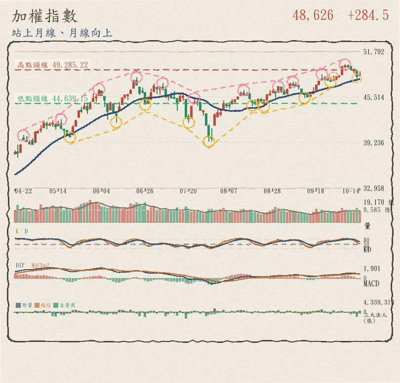
圖說：加權指數日 K（與個股圖相同標記）：黃圈＝轉折低點、粉圈＝轉折高點、虛線小圈＝還沒確認的轉折、藍線＝月線 MA20、水平虛線＝高點／低點頸線。最後一根是資料日當天。
本區塊為公開資料的技術面觀察，不構成投資建議，
不報牌、不預測、不下買賣決策。成交金額為集中市場總成交金額（含 ETF／權證），
與頁首摘要的「上市個股成交金額」口徑不同。標籤是統計，不是評分、也不是推薦。
上市 vs 上櫃（同期快篩）
加權 +0.59% vs 櫃買 +1.40%（同向） → 同向
（兩個市場分開寫，不合併成一個數字；櫃買為 TPEX 公開資料）
櫃買歷史：TPEX 逐日回補 130 根；來源：櫃買中心 www/zh-tw/indexInfo/sectinx（逐日，官方；OpenAPI tpex_index 只回當月）
（TPEX OpenAPI 只回當月，故逐日回補；歷史不足就不算該條均線並標「資料不足」，不用錯數字）
近 20 個交易日大盤狀態回溯（最新在上）（點開看逐日主狀態／量比／量價象限）
用同一支程式回算最近 20 個交易日（主狀態 S1~S8 與量比 20 皆為當日收盤當時的判定，
不是事後調整）；量比 20 未公布的日子寫「—」。
好條件最多的（前 10）
不好條件最多的（前 10）
好條件（8 項）：站上月線、月線向上、底底高、頭頭高、突破頸線、相對大盤強、攻擊量（量增＋上漲）、守住今日高檔（距今日高點 1% 內）。
不好條件（8 項）：跌破前低、今日下跌、相對大盤弱、在月線之下、量增下跌（出貨）、貼近今日低點（1% 內）、跌破昨日低點、月線下彎。
兩邊都是同一組日線資料＋盤中即時價算出來的「符合項目數」，只是把方向相反的條件分開數；
條件數不是評分或推薦，不構成投資建議。
逆勢上漲（加權下跌、個股上漲）（6 上市 5／上櫃 1）
盤中爆量（估量比 ≥ 1.5）（35 上市 28／上櫃 7）
跌破前低（線型轉弱）（20 上市 19／上櫃 1）
今日疲弱（跌幅前 10）（10 上市 8／上櫃 2）
逐檔（70 檔，依盤中成交金額排序）
台積電 2330 上市
2440 -50.0（-2.01%）
區間或轉弱 盤中成交值 855.49 億・全榜第 1 名（上市第 1 名）・相對大盤 +1.23
好條件 3/8：月線向上、相對大盤強、守住今日高檔（距今日高點 1% 內）
不好條件 5/8：今日下跌、在月線之下、量增下跌（出貨）、貼近今日低點（1% 內）、跌破昨日低點
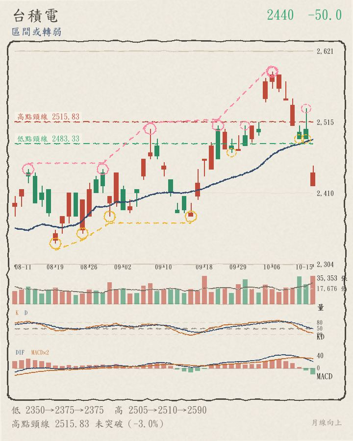
12:31 盤中 2440（-2.01%），比加權指數強 1.23 個百分點、跌破月線 2486.25，離高點頸線 2515.83 還差 3.0%，轉折還沒走出明顯方向。
- 月線位置：現價 2440 在月線 2486.25 之下（-1.9%）；5 日線 2531 也在月線之上（短均在上）；月線向上
- 量能：以已過交易時間推估，今天成交量約是 20 日均量的 2.21 倍（爆量），比 20 日均量大不少；下跌卻量增，量價背離
- 關鍵價位：高點頸線 2515.83 還沒突破，差 3.0%；前一交易日高點 2535（低於 3.7%）；今天盤中高點 2450（低於 0.4%）；今天盤中低點 2420（高於 0.8%）
- 轉折結構：低點 2350、2375、2375 與高點 2505、2510、2590 都沒有明顯遞增，屬於區間震盪或轉弱；還沒確認的轉折低點 10-13 2490、10-14 2490；還沒確認的轉折高點 10-06 2590、10-14 2535（圖上虛線小圈）
聯發科 2454 上市
4190 -285.0（-6.37%）
底部墊高、未過前高 盤中成交值 475.56 億・全榜第 2 名（上市第 2 名）・相對大盤 -3.13
好條件 1/8：底底高
不好條件 7/8：跌破前低、今日下跌、相對大盤弱、在月線之下、量增下跌（出貨）、跌破昨日低點、月線下彎
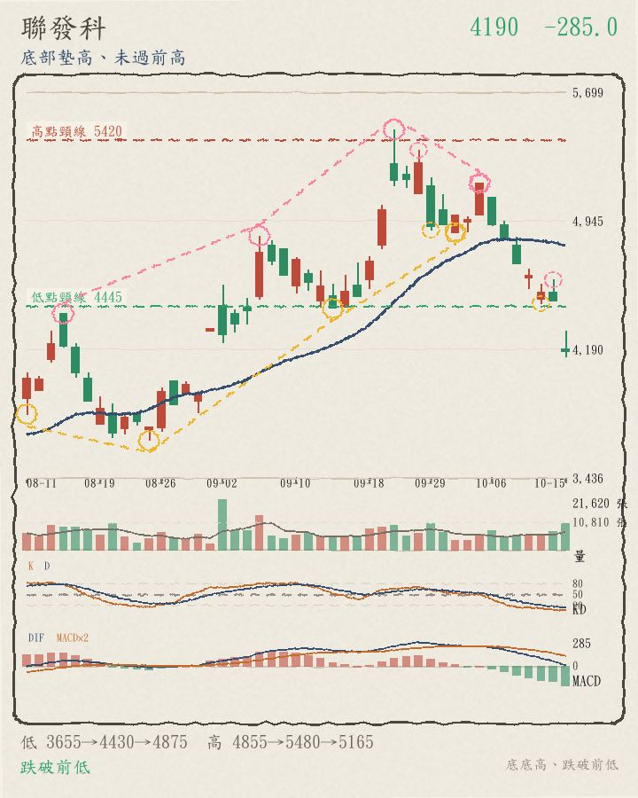
12:31 盤中 4190（-6.37%），比加權指數弱 3.13 個百分點、跌破月線 4819.25，離高點頸線 5420 還差 22.7%，底部還在墊高（但高點沒同步創高）。
- 月線位置：現價 4190 在月線 4819.25 之下（-13.1%）；5 日線 4630 也在月線之下（短均在下）；月線向下
- 量能：以已過交易時間推估，今天成交量約是 20 日均量的 2.10 倍（爆量），比 20 日均量大不少；下跌卻量增，量價背離
- 關鍵價位：已跌破前一個轉折低點；高點頸線 5420 還在現價上方 22.7%；前一交易日高點 4600（低於 8.9%）；今天盤中高點 4295（低於 2.4%）；今天盤中低點 4145（高於 1.1%）
- 轉折結構：低點 3655、4430、4875 墊高（底底高），但高點 4855、5480、5165 沒有同步創高；還沒確認的轉折低點 10-01 4875、10-13 4460；還沒確認的轉折高點 10-05 5165、10-14 4600（圖上虛線小圈）
南亞 1303 上市
314.5 -34.5（-9.89%）
高點墊高、底部不穩 盤中成交值 302.28 億・全榜第 3 名（上市第 3 名）・相對大盤 -6.65
好條件 4/8：站上月線、月線向上、頭頭高、突破頸線
不好條件 4/8：今日下跌、相對大盤弱、量增下跌（出貨）、跌破昨日低點
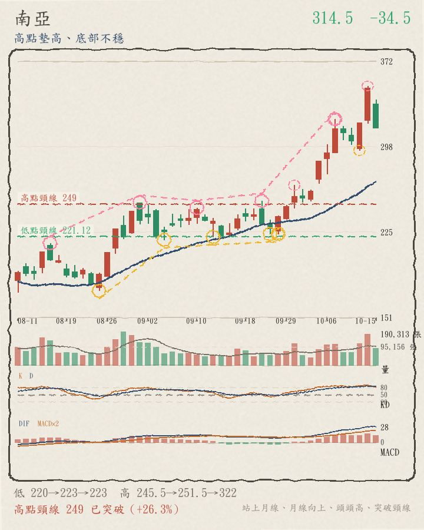
12:31 盤中 314.5（-9.89%），比加權指數弱 6.65 個百分點、站上月線 264.025，已突破高點頸線 249，高點還在墊高（但底部沒同步墊高）。
- 月線位置：現價 314.5 在月線 264.025 之上（+19.1%）；5 日線 319 也在月線之上（短均在上）；月線向上
- 量能：以已過交易時間推估，今天成交量約是 20 日均量的 1.64 倍（爆量），比 20 日均量大不少；下跌卻量增，量價背離
- 關鍵價位：高點頸線 249 已站上；前一交易日高點 350.5（低於 10.3%）；今天盤中高點 338.5（低於 7.1%）；今天盤中低點 314.5（高於 0.0%）
- 轉折結構：高點 245.5、251.5、322 墊高（頭頭高），但低點 220.5、223、223 沒有同步墊高；還沒確認的轉折低點 09-24 223、10-13 295；還沒確認的轉折高點 10-07 322、10-14 350.5（圖上虛線小圈）
南亞科 2408 上市
435 -45.5（-9.47%）
區間或轉弱 盤中成交值 276.73 億・全榜第 4 名（上市第 4 名）・相對大盤 -6.23
好條件 0/8：無
不好條件 8/8：跌破前低、今日下跌、相對大盤弱、在月線之下、量增下跌（出貨）、貼近今日低點（1% 內）、跌破昨日低點、月線下彎
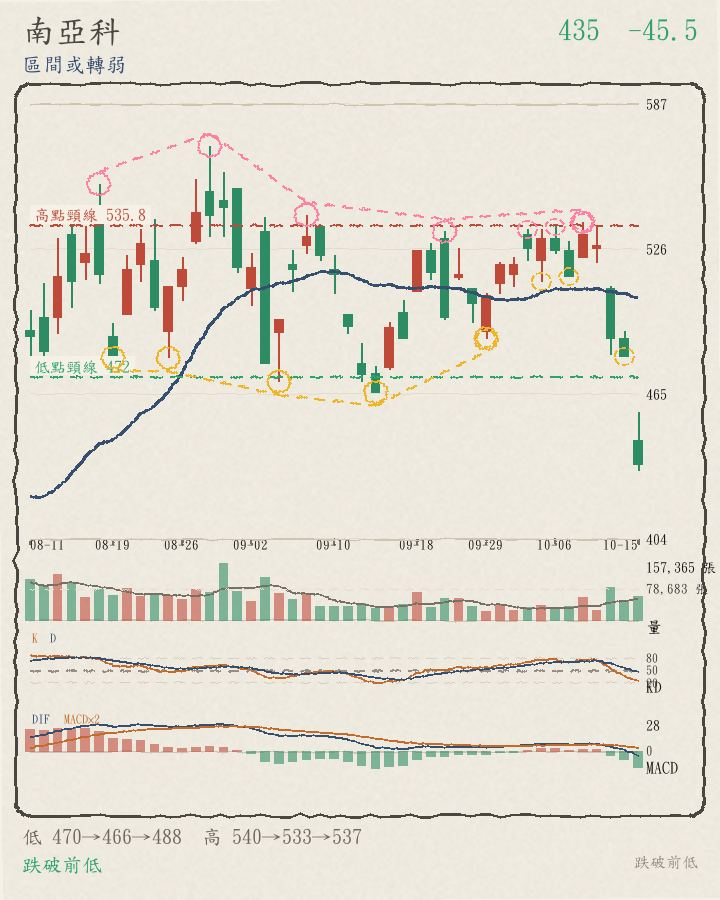
12:31 盤中 435（-9.47%），比加權指數弱 6.23 個百分點、跌破月線 507.075，離高點頸線 535.8 還差 18.8%，轉折還沒走出明顯方向。
- 月線位置：現價 435 在月線 507.075 之下（-14.2%）；5 日線 508.3 也在月線之上（短均在上）；月線向下
- 量能：以已過交易時間推估，今天成交量約是 20 日均量的 1.85 倍（爆量），比 20 日均量大不少；下跌卻量增，量價背離
- 關鍵價位：已跌破前一個轉折低點；高點頸線 535.8 還在現價上方 18.8%；前一交易日高點 491（低於 11.4%）；今天盤中高點 457（低於 4.8%）；今天盤中低點 432.5（高於 0.6%）
- 轉折結構：低點 470、465.5、488 與高點 540、533、537 都沒有明顯遞增，屬於區間震盪或轉弱；還沒確認的轉折低點 10-07 514、10-14 480.5；還沒確認的轉折高點 10-06 535、10-08 537（圖上虛線小圈）
台達電 2308 上市
1635 -150.0（-8.40%）
高點墊高、底部不穩 盤中成交值 271.67 億・全榜第 5 名（上市第 5 名）・相對大盤 -5.16
好條件 2/8：月線向上、頭頭高
不好條件 6/8：跌破前低、今日下跌、相對大盤弱、在月線之下、量增下跌（出貨）、跌破昨日低點
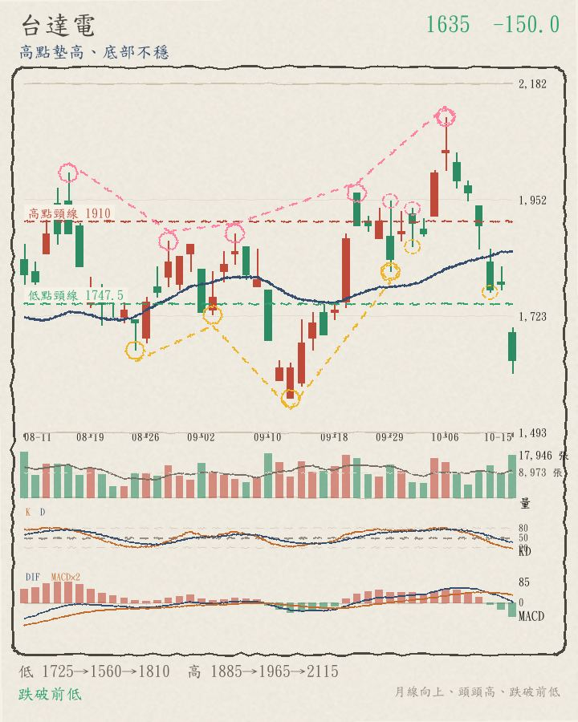
12:31 盤中 1635（-8.40%），比加權指數弱 5.16 個百分點、跌破月線 1849.5，離高點頸線 1910 還差 14.4%，高點還在墊高（但底部沒同步墊高）。
- 月線位置：現價 1635 在月線 1849.5 之下（-11.6%）；5 日線 1883 也在月線之上（短均在上）；月線向上
- 量能：以已過交易時間推估，今天成交量約是 20 日均量的 1.96 倍（爆量），比 20 日均量大不少；下跌卻量增，量價背離
- 關鍵價位：已跌破前一個轉折低點；高點頸線 1910 還在現價上方 14.4%；前一交易日高點 1820（低於 10.2%）；今天盤中高點 1700（低於 3.8%）；今天盤中低點 1610（高於 1.6%）
- 轉折結構：高點 1885、1965、2115 墊高（頭頭高），但低點 1725、1560、1810 沒有同步墊高；還沒確認的轉折低點 10-01 1860、10-13 1770；還沒確認的轉折高點 10-01 1935、10-06 2115（圖上虛線小圈）
台虹 8039 上市
297 -6.0（-1.98%）
區間或轉弱 盤中成交值 262.99 億・全榜第 6 名（上市第 6 名）・相對大盤 +1.26
好條件 3/8：站上月線、月線向上、相對大盤強
不好條件 3/8：今日下跌、量增下跌（出貨）、跌破昨日低點
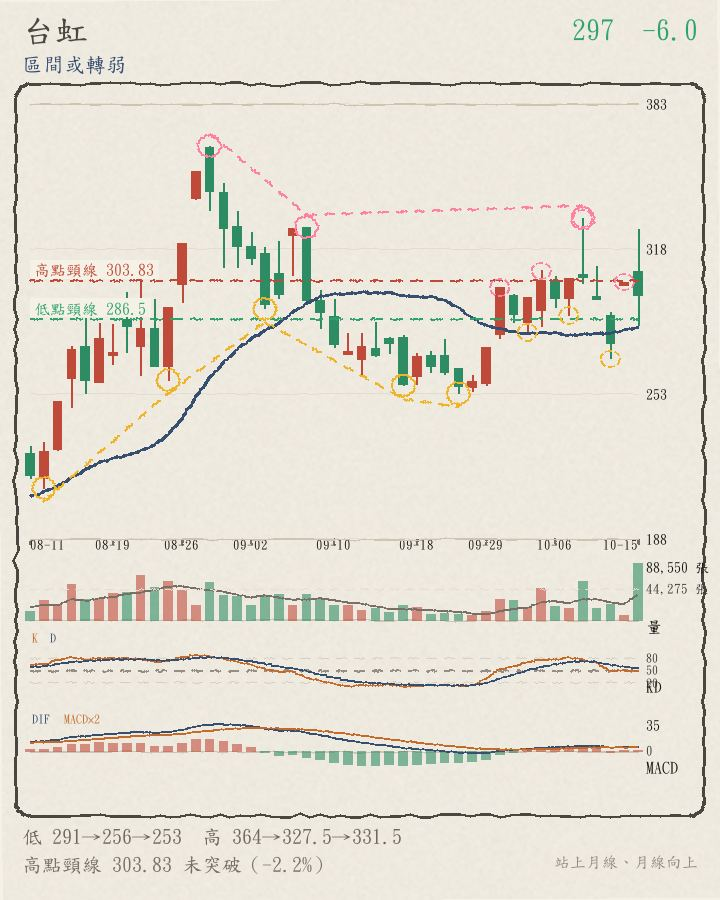
12:31 盤中 297（-1.98%），比加權指數強 1.26 個百分點、站上月線 281.5，離高點頸線 303.83 還差 2.2%，轉折還沒走出明顯方向。
- 月線位置：現價 297 在月線 281.5 之上（+5.5%）；5 日線 296.9 也在月線之上（短均在上）；月線向上
- 量能：以已過交易時間推估，今天成交量約是 20 日均量的 5.34 倍（爆量），比 20 日均量大不少；下跌卻量增，量價背離
- 關鍵價位：高點頸線 303.83 還沒突破，差 2.2%；前一交易日高點 303（低於 2.0%）；今天盤中高點 326.5（低於 9.0%）；今天盤中低點 283.5（高於 4.8%）
- 轉折結構：低點 291、256.5、253 與高點 364、327.5、331.5 都沒有明顯遞增，屬於區間震盪或轉弱；還沒確認的轉折低點 10-07 288、10-13 268.5；還沒確認的轉折高點 10-08 331.5、10-14 303（圖上虛線小圈）
欣興 3037 上市
1075 -110.0（-9.28%）
高點墊高、底部不穩 盤中成交值 253.25 億・全榜第 7 名（上市第 7 名）・相對大盤 -6.04
好條件 3/8：月線向上、頭頭高、突破頸線
不好條件 6/8：今日下跌、相對大盤弱、在月線之下、量增下跌（出貨）、貼近今日低點（1% 內）、跌破昨日低點
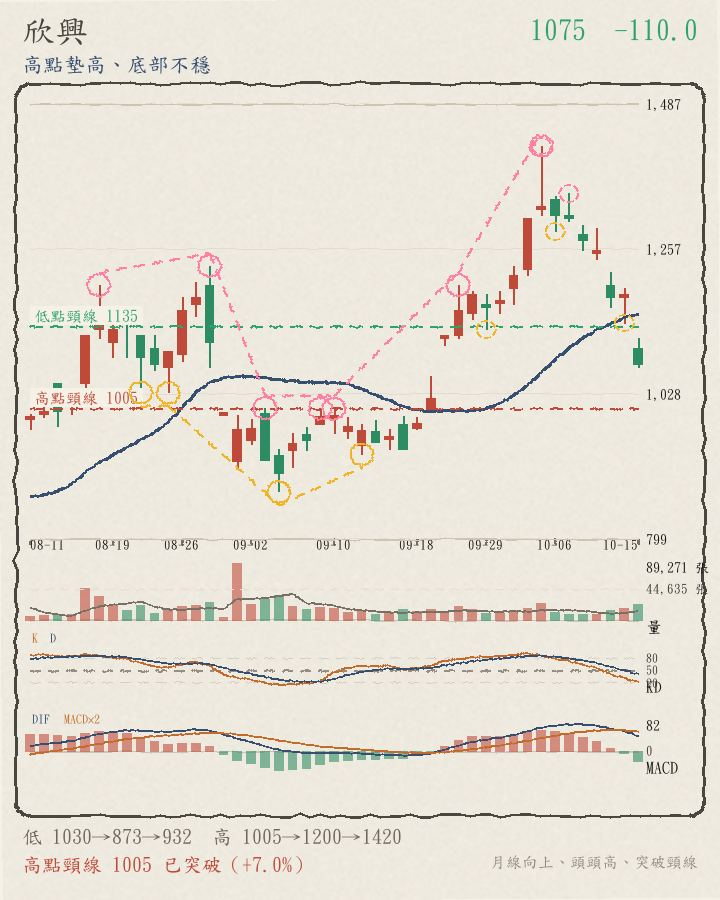
12:31 盤中 1075（-9.28%），比加權指數弱 6.04 個百分點、跌破月線 1148.9，已突破高點頸線 1005，高點還在墊高（但底部沒同步墊高）。
- 月線位置：現價 1075 在月線 1148.9 之下（-6.4%）；5 日線 1239 也在月線之上（短均在上）；月線向上
- 量能：以已過交易時間推估，今天成交量約是 20 日均量的 2.23 倍（爆量），比 20 日均量大不少；下跌卻量增，量價背離
- 關鍵價位：高點頸線 1005 已站上；前一交易日高點 1195（低於 10.0%）；今天盤中高點 1115（低於 3.6%）；今天盤中低點 1070（高於 0.5%）
- 轉折結構：高點 1005、1200、1420 墊高（頭頭高），但低點 1030、873、932 沒有同步墊高；還沒確認的轉折低點 10-06 1285、10-14 1140；還沒確認的轉折高點 10-05 1420、10-07 1345（圖上虛線小圈）
國巨* 2327 上市
578 -49.0（-7.81%）
區間或轉弱 盤中成交值 249.37 億・全榜第 8 名（上市第 8 名）・相對大盤 -4.57
好條件 1/8：月線向上
不好條件 5/8：今日下跌、相對大盤弱、在月線之下、量增下跌（出貨）、跌破昨日低點
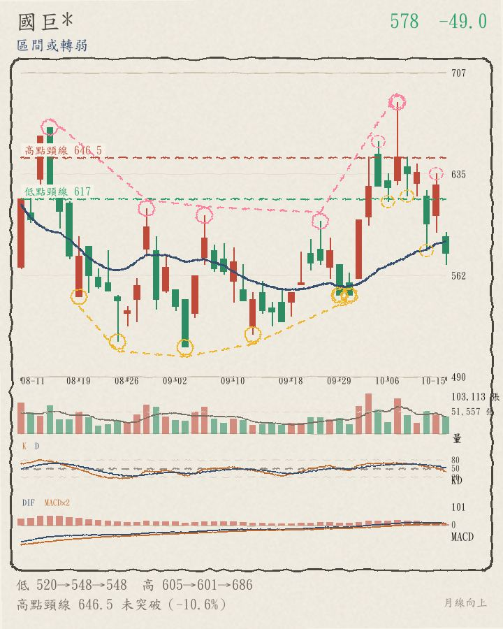
12:31 盤中 578（-7.81%），比加權指數弱 4.57 個百分點、跌破月線 584.85，離高點頸線 646.5 還差 10.6%，轉折還沒走出明顯方向。
- 月線位置：現價 578 在月線 584.85 之下（-1.2%）；5 日線 628.8 也在月線之上（短均在上）；月線向上
- 量能：以已過交易時間推估，今天成交量約是 20 日均量的 1.32 倍（量增），比 20 日均量大不少；下跌卻量增，量價背離
- 關鍵價位：高點頸線 646.5 還沒突破，差 10.6%；前一交易日高點 635（低於 9.0%）；今天盤中高點 593（低於 2.5%）；今天盤中低點 570（高於 1.4%）
- 轉折結構：低點 520、548、548 與高點 605、601、686 都沒有明顯遞增，屬於區間震盪或轉弱；還沒確認的轉折低點 10-08 619、10-13 580；還沒確認的轉折高點 10-07 686、10-14 635（圖上虛線小圈）
台光電 2383 上市
5125 -395.0（-7.16%）
區間或轉弱 盤中成交值 238.82 億・全榜第 9 名（上市第 9 名）・相對大盤 -3.92
好條件 1/8：月線向上
不好條件 5/8：今日下跌、相對大盤弱、在月線之下、量增下跌（出貨）、跌破昨日低點
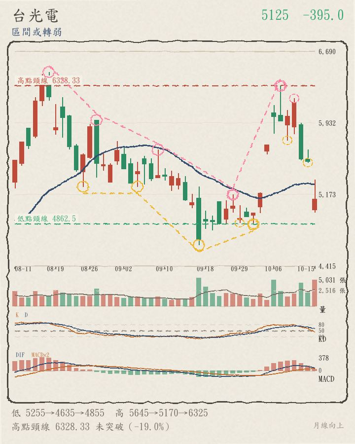
12:31 盤中 5125（-7.16%），比加權指數弱 3.92 個百分點、跌破月線 5291.5，離高點頸線 6328.33 還差 19.0%，轉折還沒走出明顯方向。
- 月線位置：現價 5125 在月線 5291.5 之下（-3.1%）；5 日線 5833 也在月線之上（短均在上）；月線向上
- 量能：以已過交易時間推估，今天成交量約是 20 日均量的 2.67 倍（爆量），比 20 日均量大不少；下跌卻量增，量價背離
- 關鍵價位：高點頸線 6328.33 還沒突破，差 19.0%；前一交易日高點 5645（低於 9.2%）；今天盤中高點 5330（低於 3.8%）；今天盤中低點 4980（高於 2.9%）
- 轉折結構：低點 5255、4635、4855 與高點 5645、5170、6325 都沒有明顯遞增，屬於區間震盪或轉弱；還沒確認的轉折低點 10-08 5745、10-14 5510；還沒確認的轉折高點 10-07 6325、10-12 6190（圖上虛線小圈）
聯電 2303 上市
134 -8.0（-5.63%）
底部墊高、未過前高 盤中成交值 217.39 億・全榜第 10 名（上市第 10 名）・相對大盤 -2.39
好條件 2/8：月線向上、底底高
不好條件 6/8：跌破前低、今日下跌、相對大盤弱、在月線之下、量增下跌（出貨）、跌破昨日低點
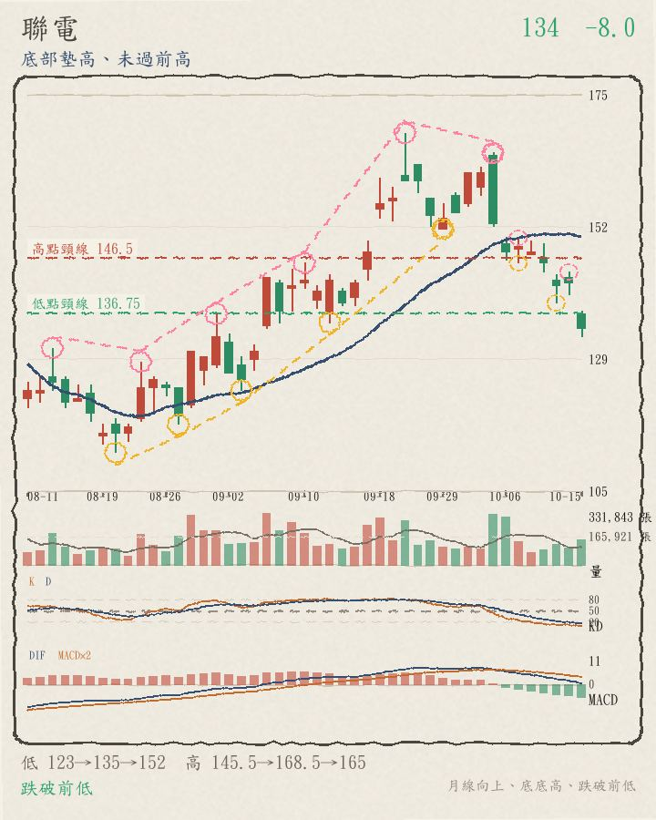
12:31 盤中 134（-5.63%），比加權指數弱 2.39 個百分點、跌破月線 150.675，離高點頸線 146.5 還差 8.5%，底部還在墊高（但高點沒同步創高）。
- 月線位置：現價 134 在月線 150.675 之下（-11.1%）；5 日線 145 也在月線之下（短均在下）；月線向上
- 量能：以已過交易時間推估，今天成交量約是 20 日均量的 1.28 倍（量增），比 20 日均量大不少；下跌卻量增，量價背離
- 關鍵價位：已跌破前一個轉折低點；高點頸線 146.5 還在現價上方 8.5%；前一交易日高點 144（低於 6.9%）；今天盤中高點 137（低於 2.2%）；今天盤中低點 132.5（高於 1.1%）
- 轉折結構：低點 123、135、151.5 墊高（底底高），但高點 145.5、168.5、165 沒有同步創高；還沒確認的轉折低點 10-07 145.5、10-13 138.5；還沒確認的轉折高點 10-07 150、10-14 144（圖上虛線小圈）
台燿 6274 上櫃
1655 -80.0（-4.61%）
高點墊高、底部不穩 盤中成交值 190.49 億・全榜第 11 名（上櫃第 1 名）・相對大盤 -1.37
好條件 3/8：站上月線、月線向上、頭頭高
不好條件 4/8：今日下跌、相對大盤弱、量增下跌（出貨）、跌破昨日低點
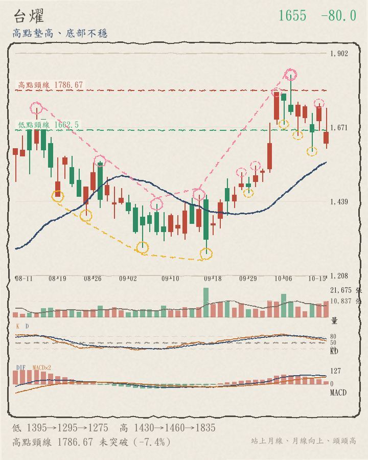
12:31 盤中 1655（-4.61%），比加權指數弱 1.37 個百分點、站上月線 1549.75，離高點頸線 1786.67 還差 7.4%，高點還在墊高（但底部沒同步墊高）。
- 月線位置：現價 1655 在月線 1549.75 之上（+6.8%）；5 日線 1717 也在月線之上（短均在上）；月線向上
- 量能：以已過交易時間推估，今天成交量約是 20 日均量的 1.60 倍（爆量），比 20 日均量大不少；下跌卻量增，量價背離
- 關鍵價位：高點頸線 1786.67 還沒突破，差 7.4%；前一交易日高點 1745（低於 5.2%）；今天盤中高點 1730（低於 4.3%）；今天盤中低點 1605（高於 3.1%）
- 轉折結構：高點 1430、1460、1835 墊高（頭頭高），但低點 1395、1295、1275 沒有同步墊高；還沒確認的轉折低點 10-08 1645、10-13 1595；還沒確認的轉折高點 10-07 1835、10-14 1745（圖上虛線小圈）
日月光投控 3711 上市
673 -74.0（-9.91%）
上升趨勢（底底高＋頭頭高） 盤中成交值 187.01 億・全榜第 12 名（上市第 11 名）・相對大盤 -6.67
好條件 3/8：月線向上、底底高、頭頭高
不好條件 6/8：跌破前低、今日下跌、相對大盤弱、在月線之下、量增下跌（出貨）、跌破昨日低點
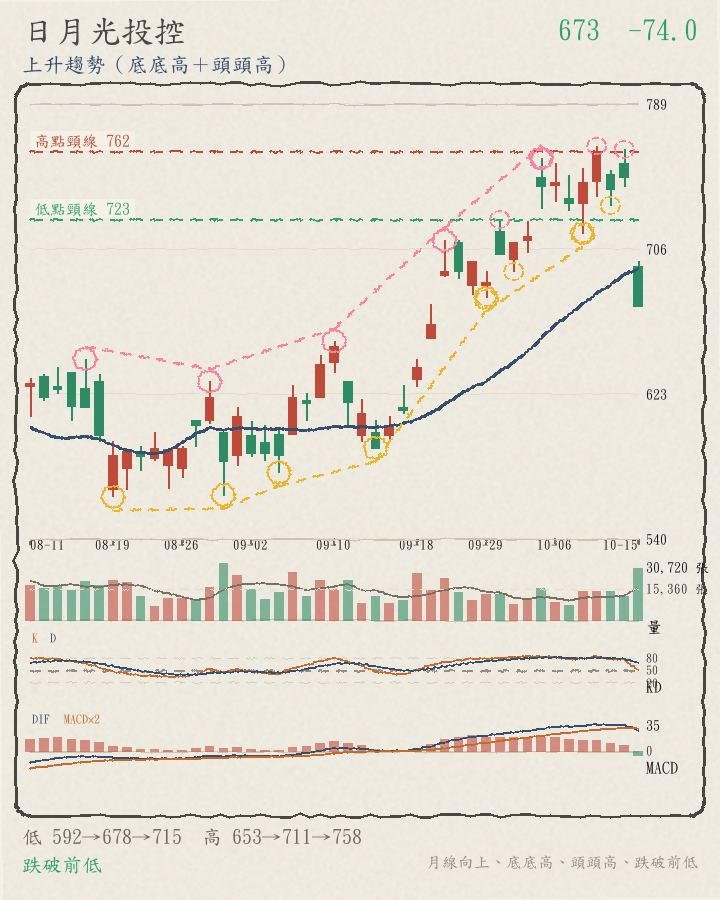
12:31 盤中 673（-9.91%），比加權指數弱 6.67 個百分點、跌破月線 691.65，離高點頸線 762 還差 11.7%，轉折結構仍是底底高＋頭頭高。
- 月線位置：現價 673 在月線 691.65 之下（-2.7%）；5 日線 745 也在月線之上（短均在上）；月線向上
- 量能：以已過交易時間推估，今天成交量約是 20 日均量的 2.56 倍（爆量），比 20 日均量大不少；下跌卻量增，量價背離
- 關鍵價位：已跌破前一個轉折低點；高點頸線 762 還在現價上方 11.7%；前一交易日高點 763（低於 11.8%）；今天盤中高點 699（低於 3.7%）；今天盤中低點 673（高於 0.0%）
- 轉折結構：低點 592、678、715 一路墊高、高點 653、711、758 也一路墊高，是底底高＋頭頭高；還沒確認的轉折低點 10-08 715、10-13 731；還沒確認的轉折高點 10-12 765、10-14 763（圖上虛線小圈）
大立光 3008 上市
6700 -180.0（-2.62%）
高點墊高、底部不穩 盤中成交值 168.1 億・全榜第 13 名（上市第 12 名）・相對大盤 +0.62
好條件 4/8：站上月線、月線向上、頭頭高、相對大盤強
不好條件 2/8：今日下跌、量增下跌（出貨）
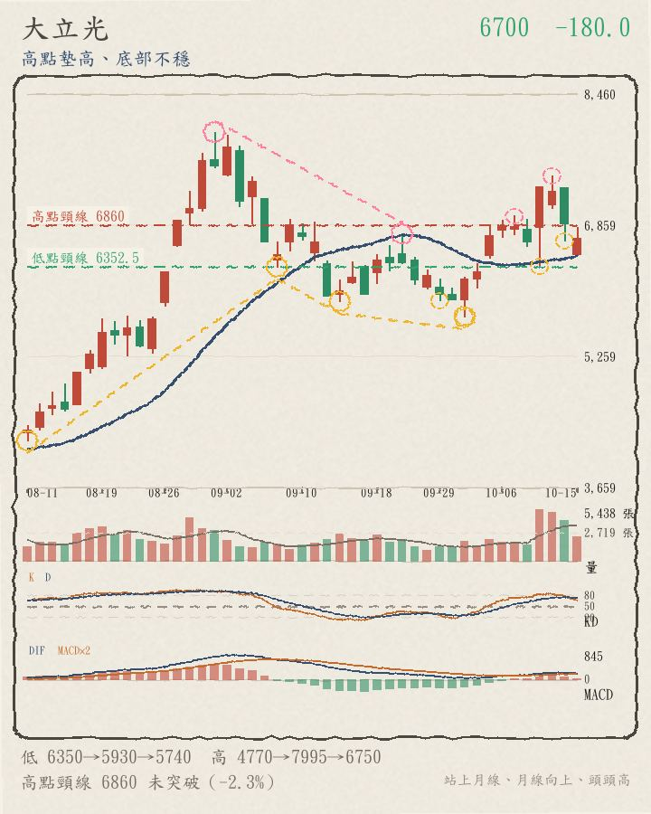
12:31 盤中 6700（-2.62%），比加權指數強 0.62 個百分點、站上月線 6449.75，離高點頸線 6860 還差 2.3%，高點還在墊高（但底部沒同步墊高）。
- 月線位置：現價 6700 在月線 6449.75 之上（+3.9%）；5 日線 6997 也在月線之上（短均在上）；月線向上
- 量能：以已過交易時間推估，今天成交量約是 20 日均量的 1.40 倍（量增），比 20 日均量大不少；下跌卻量增，量價背離
- 關鍵價位：高點頸線 6860 還沒突破，差 2.3%；前一交易日高點 7320（低於 8.5%）；今天盤中高點 6835（低於 2.0%）；今天盤中低點 6485（高於 3.3%）
- 轉折結構：高點 4770、7995、6750 墊高（頭頭高），但低點 6350、5930、5740 沒有同步墊高；還沒確認的轉折低點 10-12 6355、10-14 6670；還沒確認的轉折高點 10-07 6970、10-13 7460（圖上虛線小圈）
台表科 6278 上市
305.5 +15.5（+5.34%）
上升趨勢（底底高＋頭頭高） 盤中成交值 148.9 億・全榜第 14 名（上市第 13 名）・相對大盤 +8.58
好條件 8/8：站上月線、月線向上、底底高、頭頭高、突破頸線、相對大盤強、攻擊量（量增＋上漲）、守住今日高檔（距今日高點 1% 內）
不好條件 0/8：無
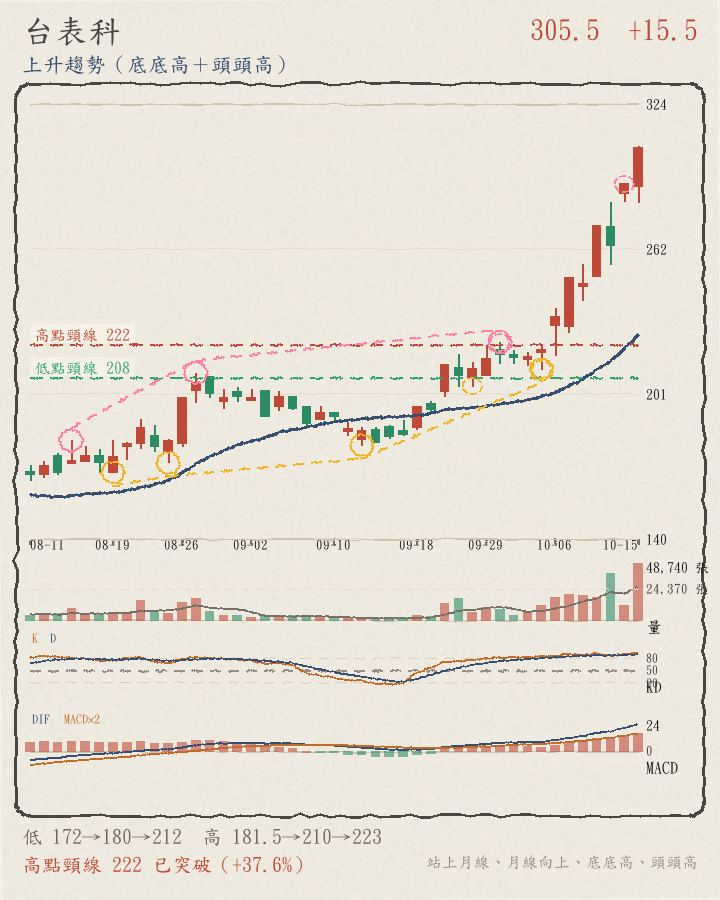
12:31 盤中 305.5（+5.34%），比加權指數強 8.58 個百分點、站上月線 220.225，已突破高點頸線 222，轉折結構仍是底底高＋頭頭高。
- 月線位置：現價 305.5 在月線 220.225 之上（+38.7%）；5 日線 265 也在月線之上（短均在上）；月線向上
- 量能：以已過交易時間推估，今天成交量約是 20 日均量的 5.72 倍（爆量），比 20 日均量大不少；上漲又量增，量價配合
- 關鍵價位：高點頸線 222 已站上；前一交易日高點 290（高於 5.3%）；今天盤中高點 306（低於 0.2%）；今天盤中低點 282（高於 8.3%）
- 轉折結構：低點 172、179.5、211.5 一路墊高、高點 181.5、210、223 也一路墊高，是底底高＋頭頭高；還沒確認的轉折低點 09-24 204.5、10-05 211.5；還沒確認的轉折高點 09-30 223、10-14 290（圖上虛線小圈）
創意 3443 上市
7805 -440.0（-5.34%）
上升趨勢（底底高＋頭頭高） 盤中成交值 146.27 億・全榜第 15 名（上市第 14 名）・相對大盤 -2.10
好條件 4/8：站上月線、月線向上、底底高、頭頭高
不好條件 4/8：今日下跌、相對大盤弱、量增下跌（出貨）、跌破昨日低點
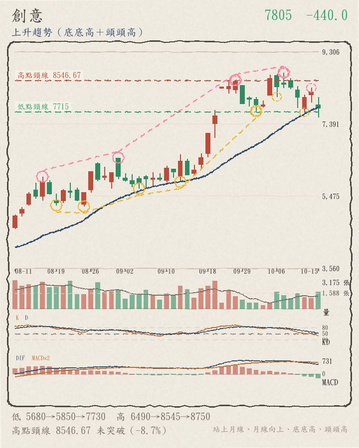
12:31 盤中 7805（-5.34%），比加權指數弱 2.10 個百分點、站上月線 7757.75，離高點頸線 8546.67 還差 8.7%，轉折結構仍是底底高＋頭頭高。
- 月線位置：現價 7805 在月線 7757.75 之上（+0.6%）；5 日線 8252 也在月線之上（短均在上）；月線向上
- 量能：以已過交易時間推估，今天成交量約是 20 日均量的 1.61 倍（爆量），比 20 日均量大不少；下跌卻量增，量價背離
- 關鍵價位：高點頸線 8546.67 還沒突破，差 8.7%；前一交易日高點 8345（低於 6.5%）；今天盤中高點 8095（低於 3.6%）；今天盤中低點 7570（高於 3.1%）
- 轉折結構：低點 5680、5850、7730 一路墊高、高點 6490、8545、8750 也一路墊高，是底底高＋頭頭高；還沒確認的轉折低點 10-06 8110、10-13 7700；還沒確認的轉折高點 10-07 8750、10-14 8345（圖上虛線小圈）
緯穎 6669 上市
1905 -210.0（-9.93%）
區間或轉弱 盤中成交值 144.95 億・全榜第 16 名（上市第 15 名）・相對大盤 -6.69
好條件 0/8：無
不好條件 7/8：跌破前低、今日下跌、相對大盤弱、在月線之下、量增下跌（出貨）、跌破昨日低點、月線下彎
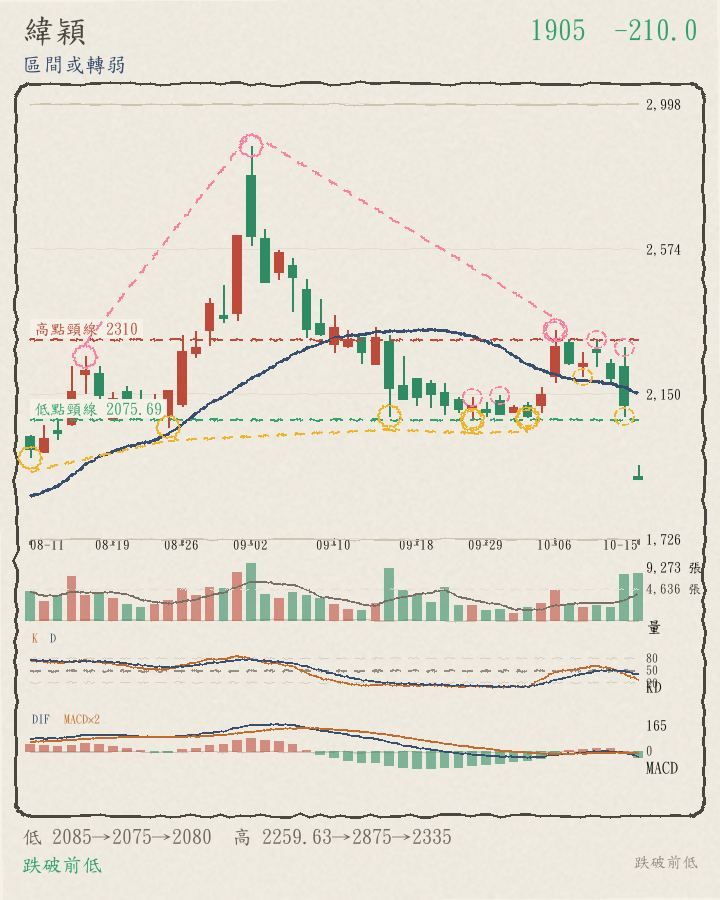
12:31 盤中 1905（-9.93%），比加權指數弱 6.69 個百分點、跌破月線 2170，離高點頸線 2310 還差 17.5%，轉折還沒走出明顯方向。
- 月線位置：現價 1905 在月線 2170 之下（-12.2%）；5 日線 2213 也在月線之上（短均在上）；月線向下
- 量能：以已過交易時間推估，今天成交量約是 20 日均量的 3.32 倍（爆量），比 20 日均量大不少；下跌卻量增，量價背離
- 關鍵價位：已跌破前一個轉折低點；高點頸線 2310 還在現價上方 17.5%；前一交易日高點 2285（低於 16.6%）；今天盤中高點 1940（低於 1.8%）；今天盤中低點 1905（高於 0.0%）
- 轉折結構：低點 2085、2075、2080 與高點 2259.63、2875、2335 都沒有明顯遞增，屬於區間震盪或轉弱；還沒確認的轉折低點 10-08 2200、10-14 2085；還沒確認的轉折高點 10-12 2310、10-14 2285（圖上虛線小圈）
環球晶 6488 上櫃
927 -93.0（-9.12%）
區間或轉弱 盤中成交值 137.72 億・全榜第 17 名（上櫃第 2 名）・相對大盤 -5.88
好條件 1/8：月線向上
不好條件 6/8：今日下跌、相對大盤弱、在月線之下、量增下跌（出貨）、貼近今日低點（1% 內）、跌破昨日低點
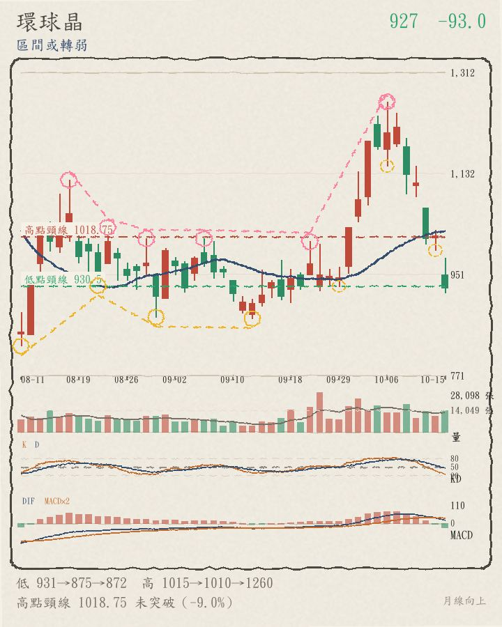
12:31 盤中 927（-9.12%），比加權指數弱 5.88 個百分點、跌破月線 1027.1，離高點頸線 1018.75 還差 9.0%，轉折還沒走出明顯方向。
- 月線位置：現價 927 在月線 1027.1 之下（-9.8%）；5 日線 1099 也在月線之上（短均在上）；月線向上
- 量能：以已過交易時間推估，今天成交量約是 20 日均量的 1.44 倍（量增），比 20 日均量大不少；下跌卻量增，量價背離
- 關鍵價位：高點頸線 1018.75 還沒突破，差 9.0%；前一交易日高點 1030（低於 10.0%）；今天盤中高點 980（低於 5.4%）；今天盤中低點 918（高於 1.0%）
- 轉折結構：低點 931、875、872 與高點 1015、1010、1260 都沒有明顯遞增，屬於區間震盪或轉弱；還沒確認的轉折低點 10-06 1145、10-14 994；還沒確認的轉折高點 10-06 1260（圖上虛線小圈）
金像電 2368 上市
1195 -65.0（-5.16%）
區間或轉弱 盤中成交值 129.05 億・全榜第 18 名（上市第 16 名）・相對大盤 -1.92
好條件 2/8：站上月線、月線向上
不好條件 3/8：今日下跌、相對大盤弱、量增下跌（出貨）
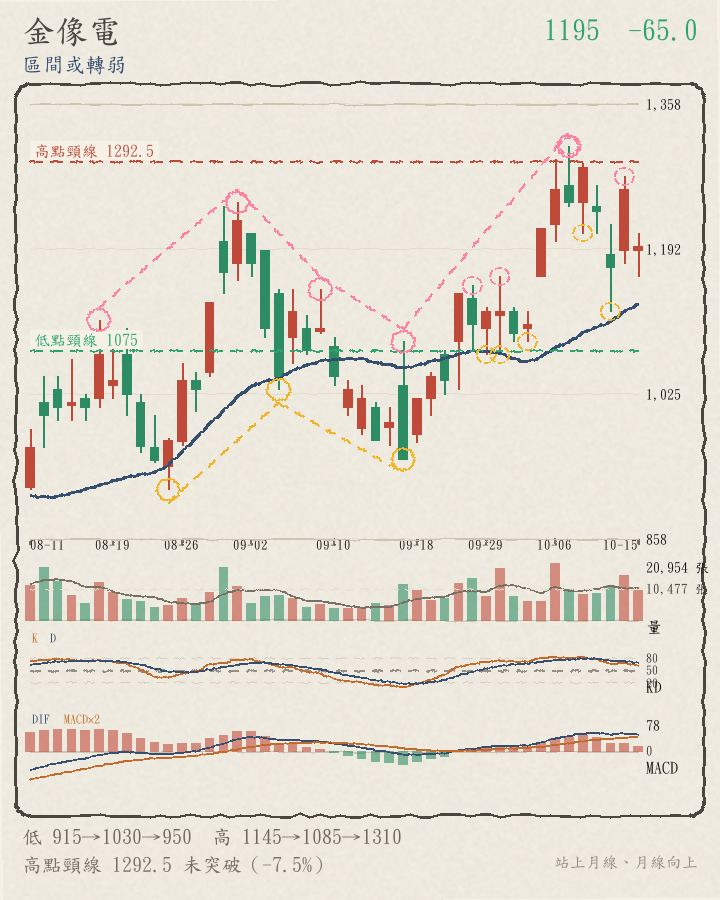
12:31 盤中 1195（-5.16%），比加權指數弱 1.92 個百分點、站上月線 1119.7，離高點頸線 1292.5 還差 7.5%，轉折還沒走出明顯方向。
- 月線位置：現價 1195 在月線 1119.7 之上（+6.7%）；5 日線 1239 也在月線之上（短均在上）；月線向上
- 量能：以已過交易時間推估，今天成交量約是 20 日均量的 1.37 倍（量增），比 20 日均量大不少；下跌卻量增，量價背離
- 關鍵價位：高點頸線 1292.5 還沒突破，差 7.5%；前一交易日高點 1275（低於 6.3%）；今天盤中高點 1210（低於 1.2%）；今天盤中低點 1160（高於 3.0%）
- 轉折結構：低點 915、1030、950 與高點 1145、1085、1310 都沒有明顯遞增，屬於區間震盪或轉弱；還沒確認的轉折低點 10-08 1210、10-13 1120；還沒確認的轉折高點 10-07 1310、10-14 1275（圖上虛線小圈）
玉晶光 3406 上市
1130 +65.0（+6.10%）
高點墊高、底部不穩 盤中成交值 126.06 億・全榜第 19 名（上市第 17 名）・相對大盤 +9.34
好條件 5/8：站上月線、月線向上、頭頭高、相對大盤強、攻擊量（量增＋上漲）
不好條件 0/8：無
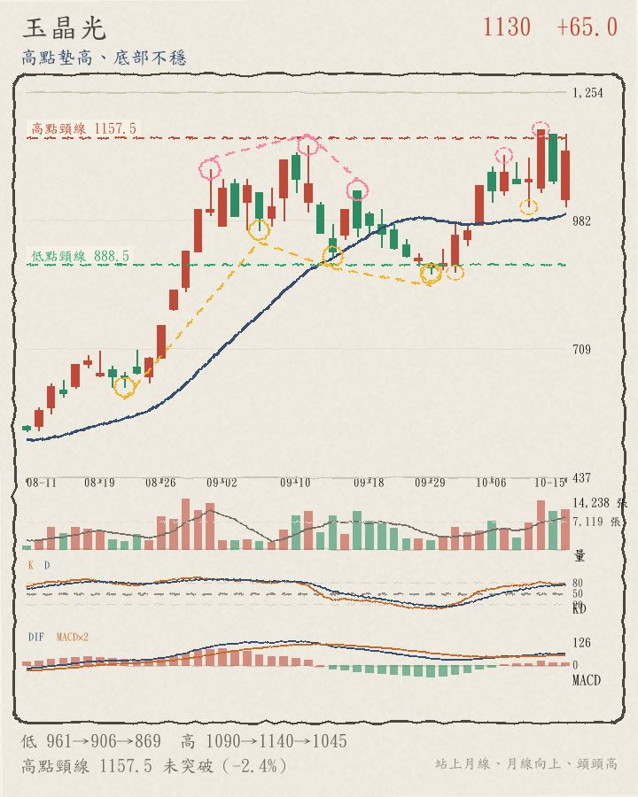
12:31 盤中 1130（+6.10%），比加權指數強 9.34 個百分點、站上月線 986.5，離高點頸線 1157.5 還差 2.4%，高點還在墊高（但底部沒同步墊高）。
- 月線位置：現價 1130 在月線 986.5 之上（+14.6%）；5 日線 1091 也在月線之上（短均在上）；月線向上
- 量能：以已過交易時間推估，今天成交量約是 20 日均量的 2.28 倍（爆量），比 20 日均量大不少；上漲又量增，量價配合
- 關鍵價位：高點頸線 1157.5 還沒突破，差 2.4%；前一交易日高點 1165（低於 3.0%）；今天盤中高點 1165（低於 3.0%）；今天盤中低點 1010（高於 11.9%）
- 轉折結構：高點 1090、1140、1045 墊高（頭頭高），但低點 961、906、869 沒有同步墊高；還沒確認的轉折低點 10-01 871、10-12 1010；還沒確認的轉折高點 10-07 1120、10-13 1175（圖上虛線小圈）
南電 8046 上市
1345 -85.0（-5.94%）
底部墊高、未過前高 盤中成交值 114.97 億・全榜第 20 名（上市第 18 名）・相對大盤 -2.70
好條件 3/8：站上月線、月線向上、底底高
不好條件 3/8：今日下跌、相對大盤弱、跌破昨日低點
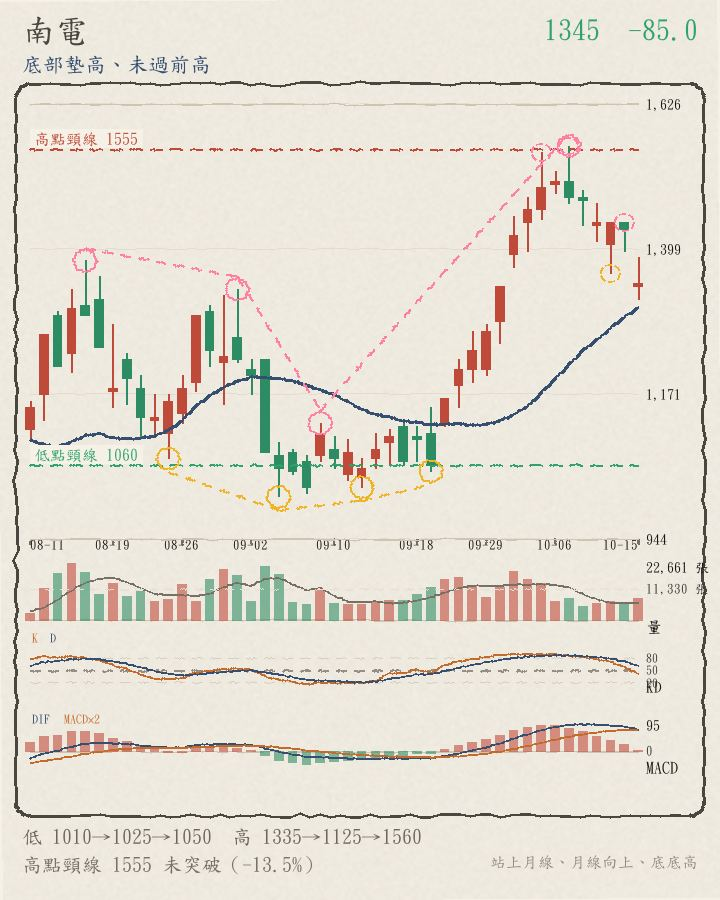
12:31 盤中 1345（-5.94%），比加權指數弱 2.70 個百分點、站上月線 1292，離高點頸線 1555 還差 13.5%，底部還在墊高（但高點沒同步創高）。
- 月線位置：現價 1345 在月線 1292 之上（+4.1%）；5 日線 1453 也在月線之上（短均在上）；月線向上
- 量能：以已過交易時間推估，今天成交量約是 20 日均量的 1.03 倍（量平），跟 20 日均量差不多
- 關鍵價位：高點頸線 1555 還沒突破，差 13.5%；前一交易日高點 1440（低於 6.6%）；今天盤中高點 1385（低於 2.9%）；今天盤中低點 1320（高於 1.9%）
- 轉折結構：低點 1010、1025、1050 墊高（底底高），但高點 1335、1125、1560 沒有同步創高；還沒確認的轉折低點 10-13 1360；還沒確認的轉折高點 10-07 1560、10-14 1440（圖上虛線小圈）
緯創 3231 上市
176 -11.0（-5.88%）
區間或轉弱 盤中成交值 112.81 億・全榜第 21 名（上市第 19 名）・相對大盤 -2.64
好條件 0/8：無
不好條件 7/8：跌破前低、今日下跌、相對大盤弱、在月線之下、量增下跌（出貨）、跌破昨日低點、月線下彎
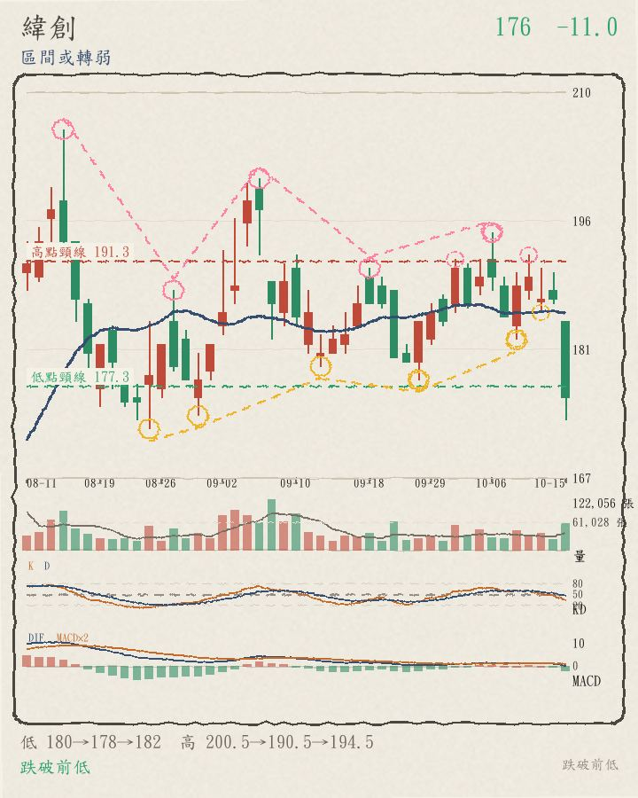
12:31 盤中 176（-5.88%），比加權指數弱 2.64 個百分點、跌破月線 185.7，離高點頸線 191.3 還差 8.0%，轉折還沒走出明顯方向。
- 月線位置：現價 176 在月線 185.7 之下（-5.2%）；5 日線 187.4 也在月線之上（短均在上）；月線向下
- 量能：以已過交易時間推估，今天成交量約是 20 日均量的 2.34 倍（爆量），比 20 日均量大不少；下跌卻量增，量價背離
- 關鍵價位：已跌破前一個轉折低點；高點頸線 191.3 還在現價上方 8.0%；前一交易日高點 190（低於 7.4%）；今天盤中高點 184.5（低於 4.6%）；今天盤中低點 173.5（高於 1.4%）
- 轉折結構：低點 179.5、178、182.5 與高點 200.5、190.5、194.5 都沒有明顯遞增，屬於區間震盪或轉弱；還沒確認的轉折低點 10-08 182.5、10-13 185.5；還沒確認的轉折高點 10-06 194.5、10-12 192（圖上虛線小圈）
台塑 1301 上市
81.4 -7.5（-8.44%）
高點墊高、底部不穩 盤中成交值 105.11 億・全榜第 22 名（上市第 20 名）・相對大盤 -5.20
好條件 4/8：站上月線、月線向上、頭頭高、突破頸線
不好條件 3/8：今日下跌、相對大盤弱、量增下跌（出貨）
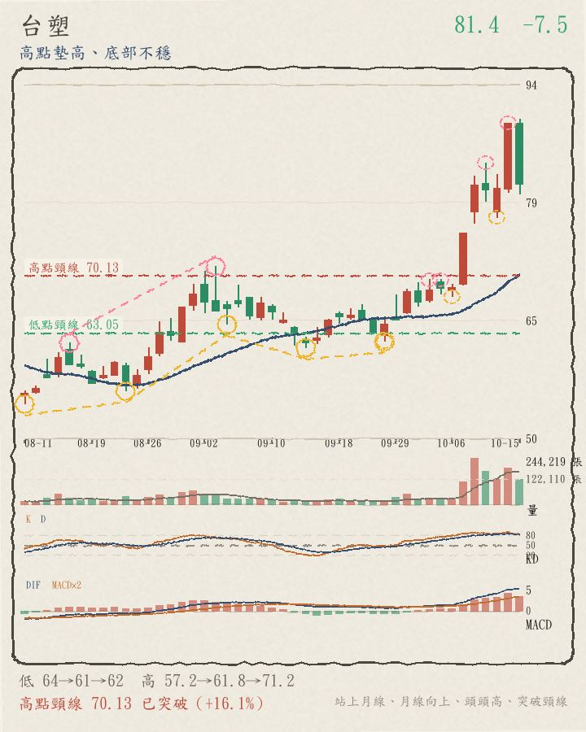
12:31 盤中 81.4（-8.44%），比加權指數弱 5.20 個百分點、站上月線 69.3，已突破高點頸線 70.13，高點還在墊高（但底部沒同步墊高）。
- 月線位置：現價 81.4 在月線 69.3 之上（+17.5%）；5 日線 81.44 也在月線之上（短均在上）；月線向上
- 量能：以已過交易時間推估，今天成交量約是 20 日均量的 3.18 倍（爆量），比 20 日均量大不少；下跌卻量增，量價背離
- 關鍵價位：高點頸線 70.13 已站上；前一交易日高點 88.9（低於 8.4%）；今天盤中高點 89.4（低於 8.9%）；今天盤中低點 80.2（高於 1.5%）
- 轉折結構：高點 57.2、61.8、71.2 墊高（頭頭高），但低點 64.1、61.2、62 沒有同步墊高；還沒確認的轉折低點 10-06 67.5、10-13 77.3；還沒確認的轉折高點 10-12 84、10-14 88.9（圖上虛線小圈）
京元電子 2449 上市
271 -25.5（-8.60%）
區間或轉弱 盤中成交值 103.41 億・全榜第 23 名（上市第 21 名）・相對大盤 -5.36
好條件 1/8：月線向上
不好條件 6/8：跌破前低、今日下跌、相對大盤弱、在月線之下、量增下跌（出貨）、跌破昨日低點
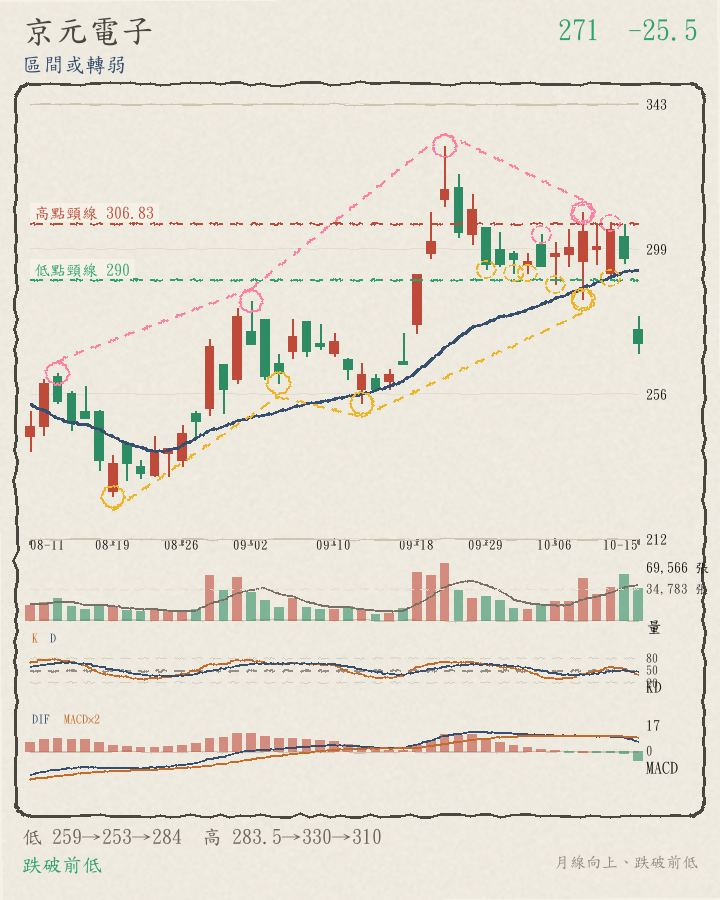
12:31 盤中 271（-8.60%），比加權指數弱 5.36 個百分點、跌破月線 292.4，離高點頸線 306.83 還差 11.7%，轉折還沒走出明顯方向。
- 月線位置：現價 271 在月線 292.4 之下（-7.3%）；5 日線 301.1 也在月線之上（短均在上）；月線向上
- 量能：以已過交易時間推估，今天成交量約是 20 日均量的 1.73 倍（爆量），比 20 日均量大不少；下跌卻量增，量價背離
- 關鍵價位：已跌破前一個轉折低點；高點頸線 306.83 還在現價上方 11.7%；前一交易日高點 306.5（低於 11.6%）；今天盤中高點 279（低於 2.9%）；今天盤中低點 268（高於 1.1%）
- 轉折結構：低點 259、253、284 與高點 283.5、330、310 都沒有明顯遞增，屬於區間震盪或轉弱；還沒確認的轉折低點 10-08 284、10-13 290.5；還沒確認的轉折高點 10-08 310、10-13 307（圖上虛線小圈）
臻鼎-KY 4958 上市
526 -41.0（-7.23%）
底部墊高、未過前高 盤中成交值 101.03 億・全榜第 24 名（上市第 22 名）・相對大盤 -3.99
好條件 3/8：站上月線、月線向上、底底高
不好條件 3/8：今日下跌、相對大盤弱、跌破昨日低點
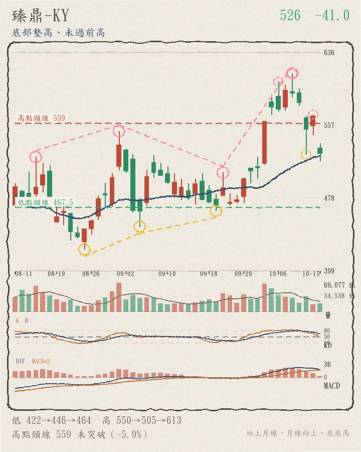
12:31 盤中 526（-7.23%），比加權指數弱 3.99 個百分點、站上月線 521.525，離高點頸線 559 還差 5.9%，底部還在墊高（但高點沒同步創高）。
- 月線位置：現價 526 在月線 521.525 之上（+0.9%）；5 日線 577.4 也在月線之上（短均在上）；月線向上
- 量能：以已過交易時間推估，今天成交量約是 20 日均量的 0.77 倍（量平），比 20 日均量少很多
- 關鍵價位：高點頸線 559 還沒突破，差 5.9%；前一交易日高點 568（低於 7.4%）；今天盤中高點 537（低於 2.0%）；今天盤中低點 518（高於 1.5%）
- 轉折結構：低點 421.5、446.5、463.5 墊高（底底高），但高點 550、505、613 沒有同步創高；還沒確認的轉折低點 10-13 525；還沒確認的轉折高點 10-08 613、10-14 568（圖上虛線小圈）
禾伸堂 3026 上市
814 -40.0（-4.68%）
上升趨勢（底底高＋頭頭高） 盤中成交值 98.15 億・全榜第 25 名（上市第 23 名）・相對大盤 -1.44
好條件 4/8：站上月線、月線向上、底底高、頭頭高
不好條件 3/8：今日下跌、相對大盤弱、量增下跌（出貨）
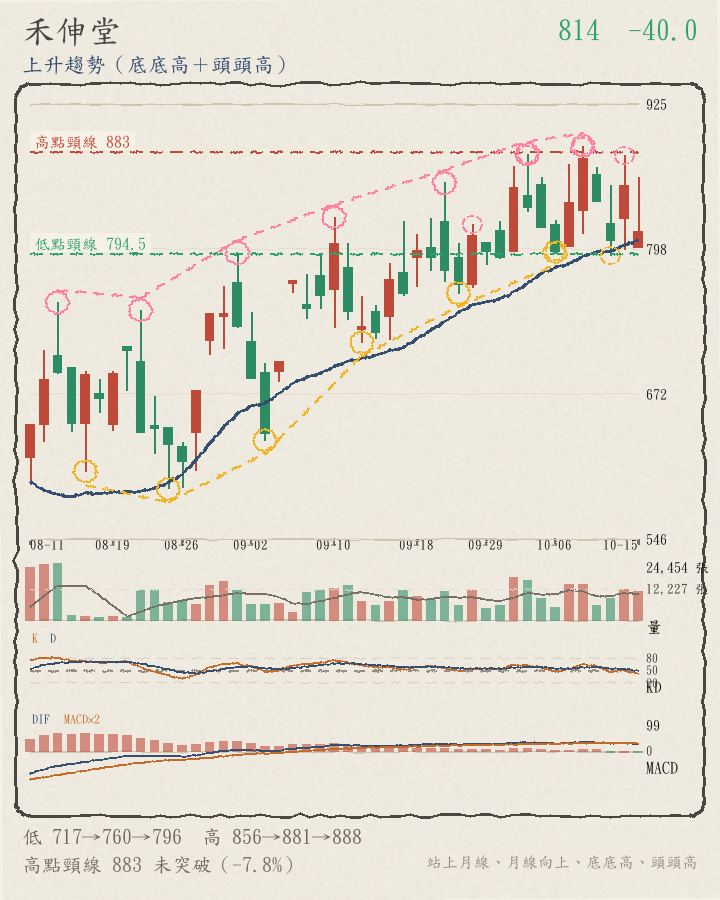
12:31 盤中 814（-4.68%），比加權指數弱 1.44 個百分點、站上月線 801.9，離高點頸線 883 還差 7.8%，轉折結構仍是底底高＋頭頭高。
- 月線位置：現價 814 在月線 801.9 之上（+1.5%）；5 日線 843.2 也在月線之上（短均在上）；月線向上
- 量能：以已過交易時間推估，今天成交量約是 20 日均量的 1.50 倍（爆量），比 20 日均量大不少；下跌卻量增，量價背離
- 關鍵價位：高點頸線 883 還沒突破，差 7.8%；前一交易日高點 880（低於 7.5%）；今天盤中高點 861（低於 5.5%）；今天盤中低點 800（高於 1.8%）
- 轉折結構：低點 717、760、796 一路墊高、高點 856、881、888 也一路墊高，是底底高＋頭頭高；還沒確認的轉折低點 10-06 796、10-13 793；還沒確認的轉折高點 10-08 888、10-14 880（圖上虛線小圈）
景碩 3189 上市
982 -68.0（-6.48%）
區間或轉弱 盤中成交值 98.08 億・全榜第 26 名（上市第 24 名）・相對大盤 -3.24
好條件 2/8：站上月線、月線向上
不好條件 3/8：今日下跌、相對大盤弱、跌破昨日低點
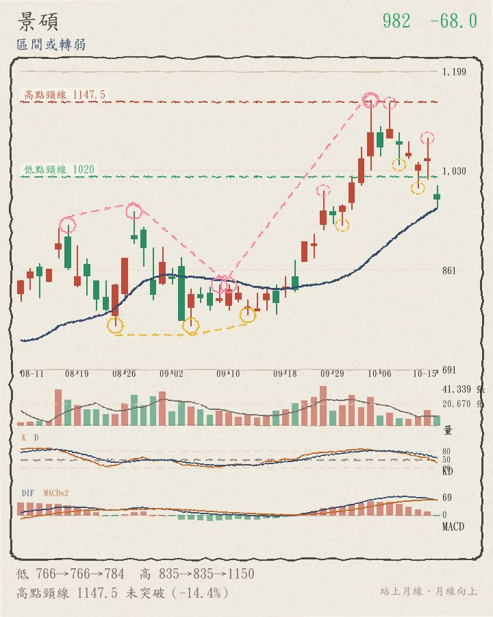
12:31 盤中 982（-6.48%），比加權指數弱 3.24 個百分點、站上月線 956.45，離高點頸線 1147.5 還差 14.4%，轉折還沒走出明顯方向。
- 月線位置：現價 982 在月線 956.45 之上（+2.7%）；5 日線 1065 也在月線之上（短均在上）；月線向上
- 量能：以已過交易時間推估，今天成交量約是 20 日均量的 0.74 倍（量平），比 20 日均量少很多
- 關鍵價位：高點頸線 1147.5 還沒突破，差 14.4%；前一交易日高點 1085（低於 9.5%）；今天盤中高點 1005（低於 2.3%）；今天盤中低點 968（高於 1.4%）
- 轉折結構：低點 766、766、784 與高點 835、835、1150 都沒有明顯遞增，屬於區間震盪或轉弱；還沒確認的轉折低點 10-08 1040、10-13 1000；還沒確認的轉折高點 10-07 1145、10-14 1085（圖上虛線小圈）
友達 2409 上市
35.4 -0.8（-2.34%）
高點墊高、底部不穩 盤中成交值 97.1 億・全榜第 27 名（上市第 25 名）・相對大盤 +0.90
好條件 4/8：站上月線、月線向上、頭頭高、相對大盤強
不好條件 1/8：今日下跌
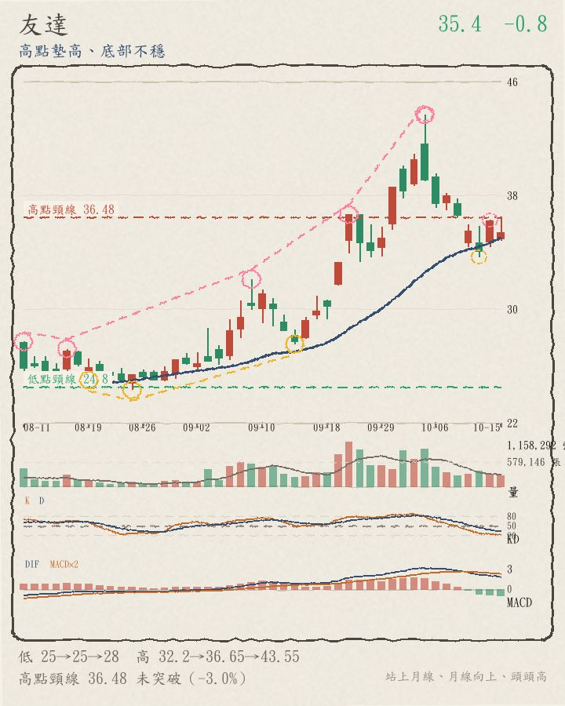
12:31 盤中 35.4（-2.34%），比加權指數強 0.90 個百分點、站上月線 34.73，離高點頸線 36.48 還差 3.0%，高點還在墊高（但底部沒同步墊高）。
- 月線位置：現價 35.4 在月線 34.73 之上（+1.9%）；5 日線 36.1 也在月線之上（短均在上）；月線向上
- 量能：以已過交易時間推估，今天成交量約是 20 日均量的 0.64 倍（量縮），比 20 日均量少很多
- 關鍵價位：高點頸線 36.48 還沒突破，差 3.0%；前一交易日高點 36.3（低於 2.5%）；今天盤中高點 36.5（低於 3.0%）；今天盤中低點 34.9（高於 1.4%）
- 轉折結構：高點 32.2、36.65、43.55 墊高（頭頭高），但低點 25.25、24.6、27.75 沒有同步墊高；還沒確認的轉折低點 10-13 33.75；還沒確認的轉折高點 10-05 43.55、10-14 36.3（圖上虛線小圈）
華邦電 2344 上市
155.5 -9.5（-5.76%）
底部墊高、未過前高 盤中成交值 96.33 億・全榜第 28 名（上市第 26 名）・相對大盤 -2.52
好條件 1/8：底底高
不好條件 6/8：跌破前低、今日下跌、相對大盤弱、在月線之下、跌破昨日低點、月線下彎
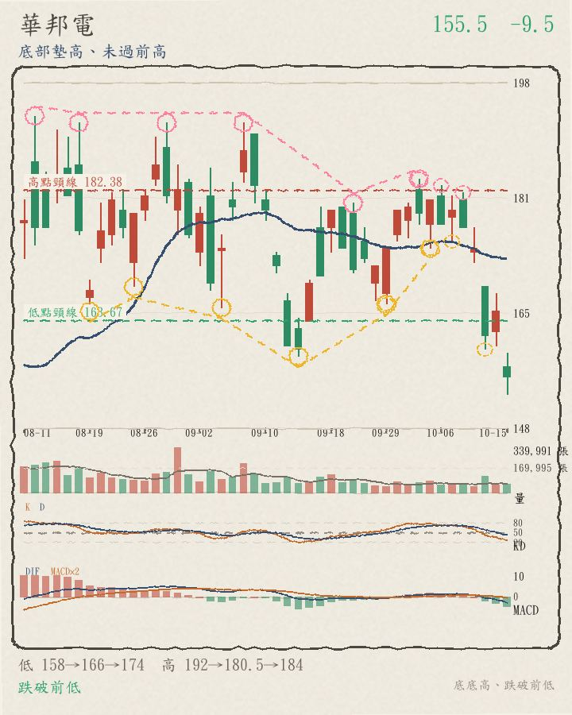
12:31 盤中 155.5（-5.76%），比加權指數弱 2.52 個百分點、跌破月線 172.75，離高點頸線 182.38 還差 14.7%，底部還在墊高（但高點沒同步創高）。
- 月線位置：現價 155.5 在月線 172.75 之下（-10.0%）；5 日線 171.4 也在月線之下（短均在下）；月線向下
- 量能：以已過交易時間推估，今天成交量約是 20 日均量的 0.99 倍（量平），跟 20 日均量差不多
- 關鍵價位：已跌破前一個轉折低點；高點頸線 182.38 還在現價上方 14.7%；前一交易日高點 167.5（低於 7.2%）；今天盤中高點 159（低於 2.2%）；今天盤中低點 153（高於 1.6%）
- 轉折結構：低點 158.5、166、174 墊高（底底高），但高點 192、180.5、184 沒有同步創高；還沒確認的轉折低點 10-07 175、10-13 159.5；還沒確認的轉折高點 10-06 183、10-08 182（圖上虛線小圈）
健策 3653 上市
6735 -335.0（-4.74%）
高點墊高、底部不穩 盤中成交值 89.64 億・全榜第 29 名（上市第 27 名）・相對大盤 -1.50
好條件 3/8：站上月線、月線向上、頭頭高
不好條件 5/8：跌破前低、今日下跌、相對大盤弱、量增下跌（出貨）、跌破昨日低點
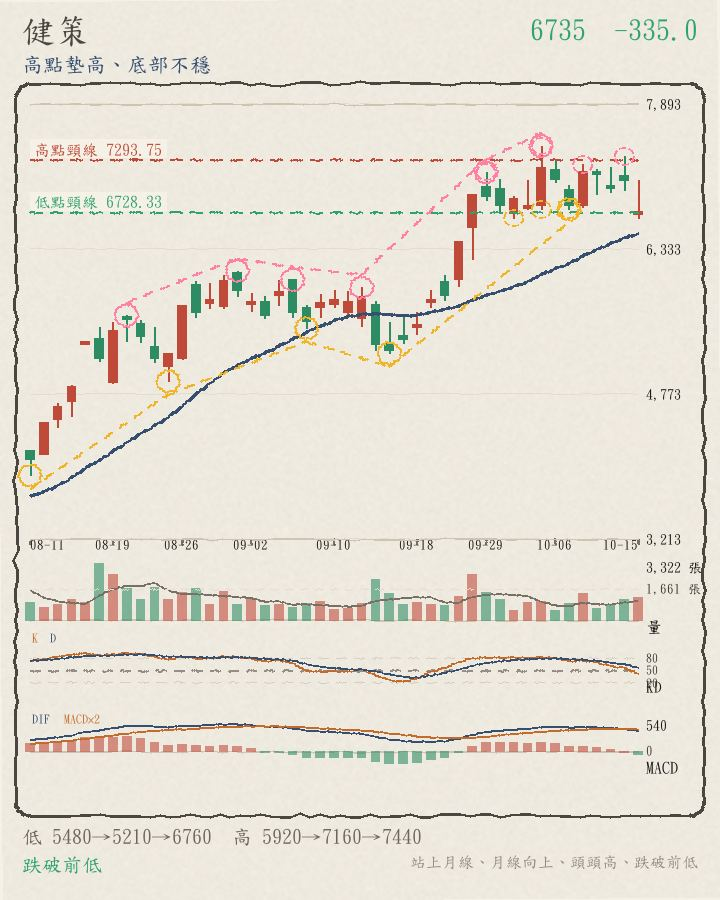
12:31 盤中 6735（-4.74%），比加權指數弱 1.50 個百分點、站上月線 6452.25，離高點頸線 7293.75 還差 7.7%，高點還在墊高（但底部沒同步墊高）。
- 月線位置：現價 6735 在月線 6452.25 之上（+4.4%）；5 日線 7038 也在月線之上（短均在上）；月線向上
- 量能：以已過交易時間推估，今天成交量約是 20 日均量的 1.46 倍（量增），比 20 日均量大不少；下跌卻量增，量價背離
- 關鍵價位：已跌破前一個轉折低點；高點頸線 7293.75 還在現價上方 7.7%；前一交易日高點 7330（低於 8.1%）；今天盤中高點 7070（低於 4.7%）；今天盤中低點 6660（高於 1.1%）
- 轉折結構：高點 5920、7160、7440 墊高（頭頭高），但低點 5480、5210、6760 沒有同步墊高；還沒確認的轉折低點 10-05 6760、10-07 6760；還沒確認的轉折高點 10-08 7245、10-14 7330（圖上虛線小圈）
鴻海 2317 上市
239 -4.0（-1.65%）
底部墊高、未過前高 盤中成交值 88.61 億・全榜第 30 名（上市第 28 名）・相對大盤 +1.59
好條件 3/8：底底高、相對大盤強、守住今日高檔（距今日高點 1% 內）
不好條件 7/8：跌破前低、今日下跌、在月線之下、量增下跌（出貨）、貼近今日低點（1% 內）、跌破昨日低點、月線下彎
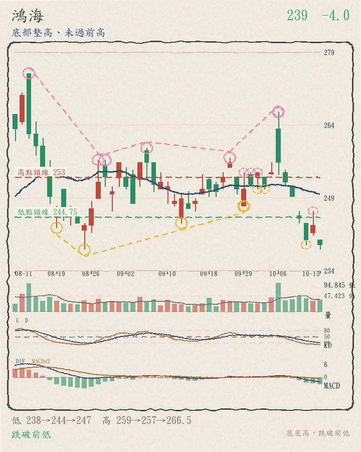
12:31 盤中 239（-1.65%），比加權指數強 1.59 個百分點、跌破月線 249.95，離高點頸線 253 還差 5.5%，底部還在墊高（但高點沒同步創高）。
- 月線位置：現價 239 在月線 249.95 之下（-4.4%）；5 日線 245.7 也在月線之下（短均在下）；月線向下
- 量能：以已過交易時間推估，今天成交量約是 20 日均量的 1.38 倍（量增），比 20 日均量大不少；下跌卻量增，量價背離
- 關鍵價位：已跌破前一個轉折低點；高點頸線 253 還在現價上方 5.5%；前一交易日高點 246（低於 2.8%）；今天盤中高點 240（低於 0.4%）；今天盤中低點 238（高於 0.4%）
- 轉折結構：低點 238、243.5、247 墊高（底底高），但高點 259、257、266.5 沒有同步創高；還沒確認的轉折低點 10-02 250.5、10-13 239；還沒確認的轉折高點 10-06 266.5、10-14 246（圖上虛線小圈）
奇鋐 3017 上市
3120 -195.0（-5.88%）
區間或轉弱 盤中成交值 86.33 億・全榜第 31 名（上市第 29 名）・相對大盤 -2.64
好條件 1/8：月線向上
不好條件 6/8：跌破前低、今日下跌、相對大盤弱、在月線之下、量增下跌（出貨）、跌破昨日低點
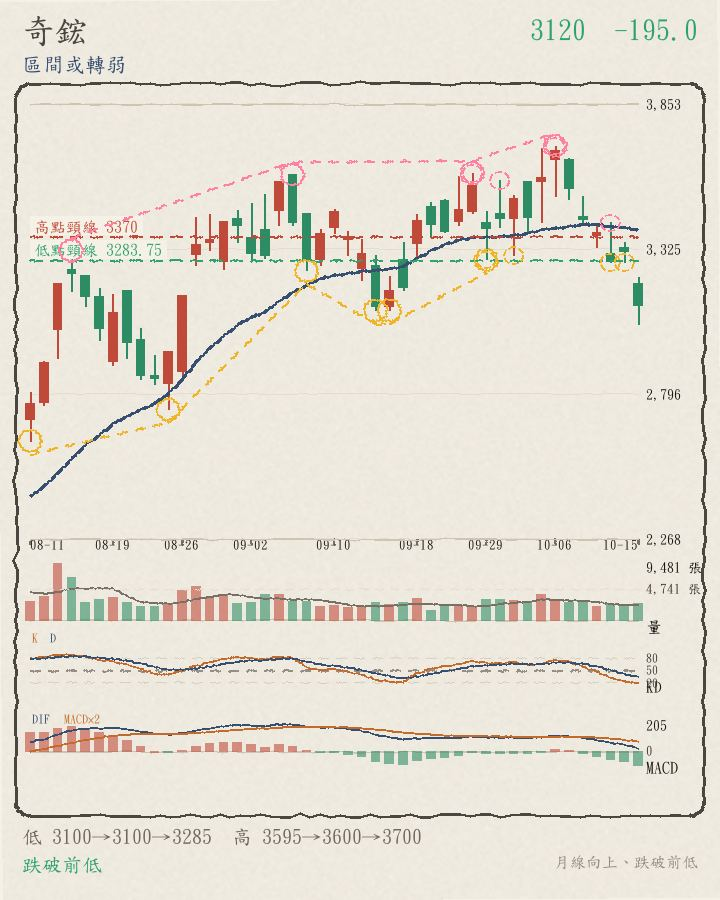
12:31 盤中 3120（-5.88%），比加權指數弱 2.64 個百分點、跌破月線 3403.25，離高點頸線 3370 還差 7.4%，轉折還沒走出明顯方向。
- 月線位置：現價 3120 在月線 3403.25 之下（-8.3%）；5 日線 3393 也在月線之下（短均在下）；月線向上
- 量能：以已過交易時間推估，今天成交量約是 20 日均量的 1.27 倍（量增），比 20 日均量大不少；下跌卻量增，量價背離
- 關鍵價位：已跌破前一個轉折低點；高點頸線 3370 還在現價上方 7.4%；前一交易日高點 3350（低於 6.9%）；今天盤中高點 3220（低於 3.1%）；今天盤中低點 3050（高於 2.3%）
- 轉折結構：低點 3100、3100、3285 與高點 3595、3600、3700 都沒有明顯遞增，屬於區間震盪或轉弱；還沒確認的轉折低點 10-13 3275、10-14 3275；還沒確認的轉折高點 10-06 3700、10-13 3420（圖上虛線小圈）
大量 3167 上市
978 +18.0（+1.88%）
上升趨勢（底底高＋頭頭高） 盤中成交值 79.33 億・全榜第 32 名（上市第 30 名）・相對大盤 +5.12
好條件 6/8：站上月線、月線向上、底底高、頭頭高、相對大盤強、攻擊量（量增＋上漲）
不好條件 0/8：無
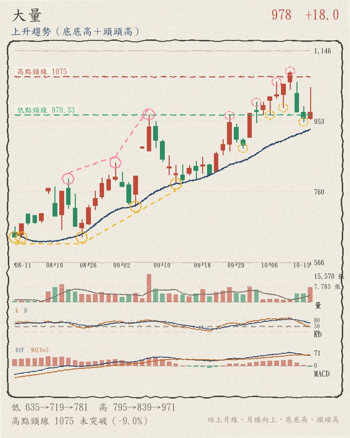
12:31 盤中 978（+1.88%），比加權指數強 5.12 個百分點、站上月線 922.5，離高點頸線 1075 還差 9.0%，轉折結構仍是底底高＋頭頭高。
- 月線位置：現價 978 在月線 922.5 之上（+6.0%）；5 日線 1020.4 也在月線之上（短均在上）；月線向上
- 量能：以已過交易時間推估，今天成交量約是 20 日均量的 2.48 倍（爆量），比 20 日均量大不少；上漲又量增，量價配合
- 關鍵價位：高點頸線 1075 還沒突破，差 9.0%；前一交易日高點 994（低於 1.6%）；今天盤中高點 1045（低於 6.4%）；今天盤中低點 957（高於 2.2%）
- 轉折結構：低點 635、719、781 一路墊高、高點 795、839、971 也一路墊高，是底底高＋頭頭高；還沒確認的轉折低點 10-08 990、10-14 951；還沒確認的轉折高點 10-07 1060、10-12 1090（圖上虛線小圈）
中探針 6217 上櫃
195 -21.5（-9.93%）
高點墊高、底部不穩 盤中成交值 78.84 億・全榜第 33 名（上櫃第 3 名）・相對大盤 -6.69
好條件 3/8：站上月線、月線向上、頭頭高
不好條件 4/8：今日下跌、相對大盤弱、量增下跌（出貨）、跌破昨日低點
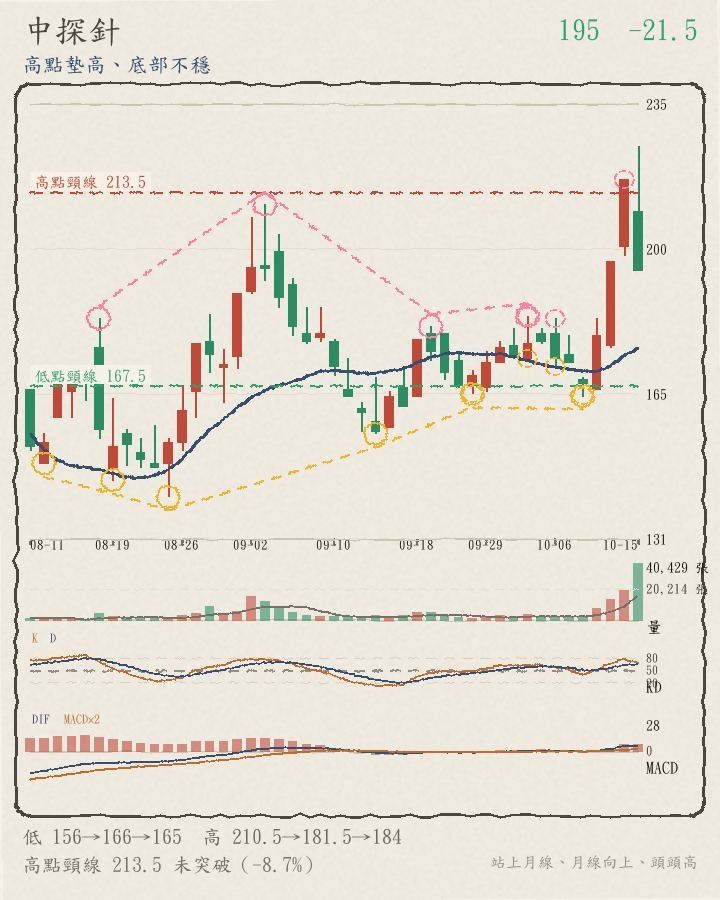
12:31 盤中 195（-9.93%），比加權指數弱 6.69 個百分點、站上月線 174.725，離高點頸線 213.5 還差 8.7%，高點還在墊高（但底部沒同步墊高）。
- 月線位置：現價 195 在月線 174.725 之上（+11.6%）；5 日線 186.8 也在月線之上（短均在上）；月線向上
- 量能：以已過交易時間推估，今天成交量約是 20 日均量的 13.96 倍（爆量），比 20 日均量大不少；下跌卻量增，量價背離
- 關鍵價位：高點頸線 213.5 還沒突破，差 8.7%；前一交易日高點 216.5（低於 9.9%）；今天盤中高點 224.5（低於 13.1%）；今天盤中低點 195（高於 0.0%）
- 轉折結構：高點 210.5、181.5、184 墊高（頭頭高），但低點 156、165.5、165 沒有同步墊高；還沒確認的轉折低點 10-06 172、10-08 165；還沒確認的轉折高點 10-06 183.5、10-14 216.5（圖上虛線小圈）
力積電 6770 上市
66.8 -4.2（-5.92%）
區間或轉弱 盤中成交值 77.84 億・全榜第 34 名（上市第 31 名）・相對大盤 -2.68
好條件 0/8：無
不好條件 7/8：跌破前低、今日下跌、相對大盤弱、在月線之下、量增下跌（出貨）、跌破昨日低點、月線下彎
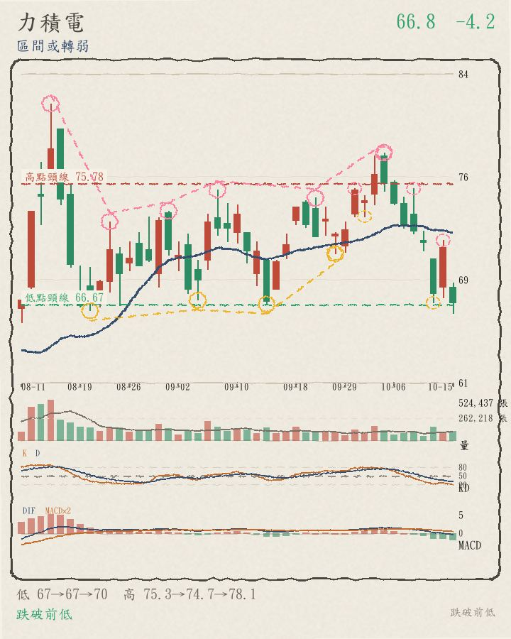
12:31 盤中 66.8（-5.92%），比加權指數弱 2.68 個百分點、跌破月線 72.285，離高點頸線 75.78 還差 11.9%，轉折還沒走出明顯方向。
- 月線位置：現價 66.8 在月線 72.285 之下（-7.6%）；5 日線 70.94 也在月線之下（短均在下）；月線向下
- 量能：以已過交易時間推估，今天成交量約是 20 日均量的 1.32 倍（量增），比 20 日均量大不少；下跌卻量增，量價背離
- 關鍵價位：已跌破前一個轉折低點；高點頸線 75.78 還在現價上方 11.9%；前一交易日高點 71.5（低於 6.6%）；今天盤中高點 68.3（低於 2.2%）；今天盤中低點 66（高於 1.2%）
- 轉折結構：低點 67、66.7、70.5 與高點 75.3、74.7、78.1 都沒有明顯遞增，屬於區間震盪或轉弱；還沒確認的轉折低點 10-01 73.3、10-13 66.8；還沒確認的轉折高點 10-08 75.4、10-14 71.5（圖上虛線小圈）
信驊 5274 上櫃
16090 -1410.0（-8.06%）
區間或轉弱 盤中成交值 76.27 億・全榜第 35 名（上櫃第 4 名）・相對大盤 -4.82
好條件 0/8：無
不好條件 6/8：今日下跌、相對大盤弱、在月線之下、量增下跌（出貨）、跌破昨日低點、月線下彎
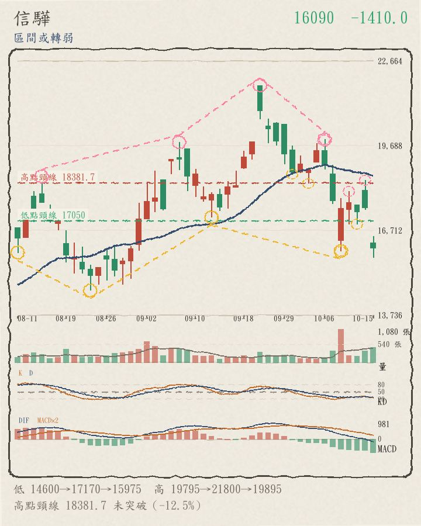
12:31 盤中 16090（-8.06%），比加權指數弱 4.82 個百分點、跌破月線 18723.2，離高點頸線 18381.7 還差 12.5%，轉折還沒走出明顯方向。
- 月線位置：現價 16090 在月線 18723.2 之下（-14.1%）；5 日線 17556 也在月線之下（短均在下）；月線向下
- 量能：以已過交易時間推估，今天成交量約是 20 日均量的 2.55 倍（爆量），比 20 日均量大不少；下跌卻量增，量價背離
- 關鍵價位：高點頸線 18381.7 還沒突破，差 12.5%；前一交易日高點 18465（低於 12.9%）；今天盤中高點 16500（低於 2.5%）；今天盤中低點 15750（高於 2.2%）
- 轉折結構：低點 14600、17170、15975 與高點 19795、21800、19895 都沒有明顯遞增，屬於區間震盪或轉弱；還沒確認的轉折低點 10-08 15975、10-13 16930；還沒確認的轉折高點 10-12 18080、10-14 18465（圖上虛線小圈）
群聯 8299 上櫃
1820 -145.0（-7.38%）
區間或轉弱 盤中成交值 72.84 億・全榜第 36 名（上櫃第 5 名）・相對大盤 -4.14
好條件 0/8：無
不好條件 7/8：跌破前低、今日下跌、相對大盤弱、在月線之下、量增下跌（出貨）、跌破昨日低點、月線下彎
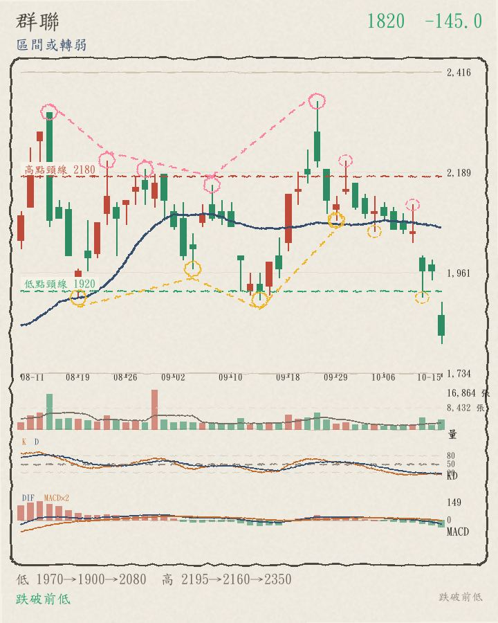
12:31 盤中 1820（-7.38%），比加權指數弱 4.14 個百分點、跌破月線 2069.5，離高點頸線 2180 還差 16.5%，轉折還沒走出明顯方向。
- 月線位置：現價 1820 在月線 2069.5 之下（-12.1%）；5 日線 2021 也在月線之下（短均在下）；月線向下
- 量能：以已過交易時間推估，今天成交量約是 20 日均量的 1.63 倍（爆量），比 20 日均量大不少；下跌卻量增，量價背離
- 關鍵價位：已跌破前一個轉折低點；高點頸線 2180 還在現價上方 16.5%；前一交易日高點 1990（低於 8.5%）；今天盤中高點 1895（低於 4.0%）；今天盤中低點 1800（高於 1.1%）
- 轉折結構：低點 1970、1900、2080 與高點 2195、2160、2350 都沒有明顯遞增，屬於區間震盪或轉弱；還沒確認的轉折低點 10-05 2055、10-13 1905；還沒確認的轉折高點 09-30 2215、10-12 2115（圖上虛線小圈）
穩懋 3105 上櫃
508 -49.0（-8.80%）
區間或轉弱 盤中成交值 68.46 億・全榜第 37 名（上櫃第 6 名）・相對大盤 -5.56
好條件 2/8：月線向上、突破頸線
不好條件 4/8：今日下跌、相對大盤弱、在月線之下、跌破昨日低點
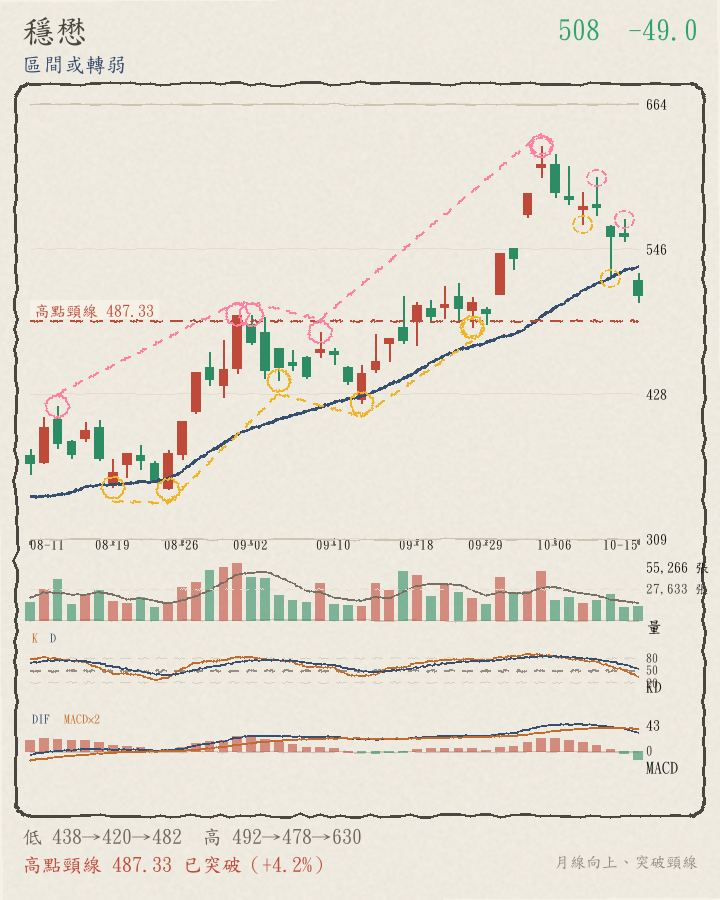
12:31 盤中 508（-8.80%），比加權指數弱 5.56 個百分點、跌破月線 528.25，已突破高點頸線 487.33，轉折還沒走出明顯方向。
- 月線位置：現價 508 在月線 528.25 之下（-3.8%）；5 日線 572.4 也在月線之上（短均在上）；月線向上
- 量能：以已過交易時間推估，今天成交量約是 20 日均量的 0.63 倍（量縮），比 20 日均量少很多
- 關鍵價位：高點頸線 487.33 已站上；前一交易日高點 570（低於 10.9%）；今天盤中高點 526（低於 3.4%）；今天盤中低點 502（高於 1.2%）
- 轉折結構：低點 438.5、420、482 與高點 492、478、630 都沒有明顯遞增，屬於區間震盪或轉弱；還沒確認的轉折低點 10-08 566、10-13 522；還沒確認的轉折高點 10-12 604、10-14 570（圖上虛線小圈）
頎邦 6147 上櫃
214 -18.0（-7.76%）
上升趨勢（底底高＋頭頭高） 盤中成交值 65.43 億・全榜第 38 名（上櫃第 7 名）・相對大盤 -4.52
好條件 3/8：月線向上、底底高、頭頭高
不好條件 4/8：今日下跌、相對大盤弱、在月線之下、跌破昨日低點
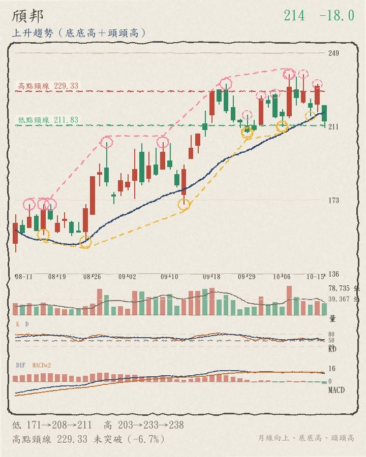
12:31 盤中 214（-7.76%），比加權指數弱 4.52 個百分點、跌破月線 217.225，離高點頸線 229.33 還差 6.7%，轉折結構仍是底底高＋頭頭高。
- 月線位置：現價 214 在月線 217.225 之下（-1.5%）；5 日線 227.9 也在月線之上（短均在上）；月線向上
- 量能：以已過交易時間推估，今天成交量約是 20 日均量的 0.92 倍（量平），比 20 日均量少一些
- 關鍵價位：高點頸線 229.33 還沒突破，差 6.7%；前一交易日高點 233（低於 8.2%）；今天盤中高點 222（低於 3.6%）；今天盤中低點 210.5（高於 1.7%）
- 轉折結構：低點 171、208、211 一路墊高、高點 203、233、238 也一路墊高，是底底高＋頭頭高；還沒確認的轉折低點 10-06 211、10-13 216.5；還沒確認的轉折高點 10-12 238、10-14 233（圖上虛線小圈）
智邦 2345 上市
1955 -95.0（-4.63%）
高點墊高、底部不穩 盤中成交值 64.89 億・全榜第 39 名（上市第 32 名）・相對大盤 -1.39
好條件 3/8：站上月線、月線向上、頭頭高
不好條件 4/8：跌破前低、今日下跌、相對大盤弱、跌破昨日低點
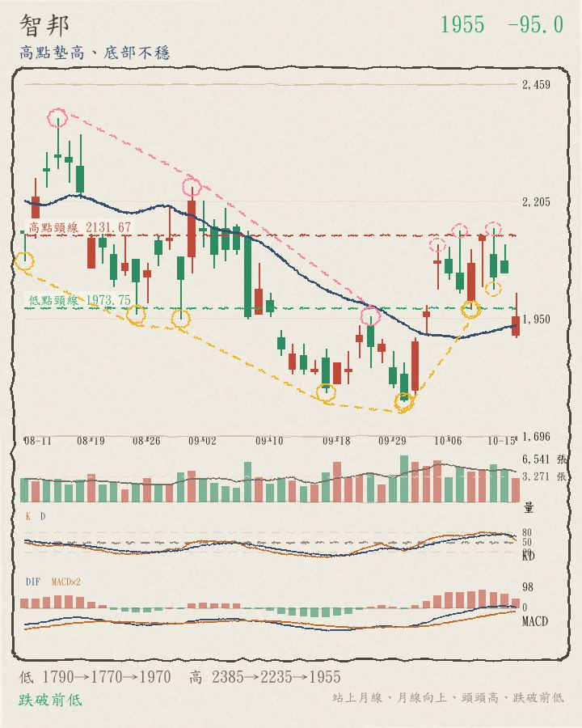
12:31 盤中 1955（-4.63%），比加權指數弱 1.39 個百分點、站上月線 1931.5，離高點頸線 2131.67 還差 8.3%，高點還在墊高（但底部沒同步墊高）。
- 月線位置：現價 1955 在月線 1931.5 之上（+1.2%）；5 日線 2061 也在月線之上（短均在上）；月線向上
- 量能：以已過交易時間推估，今天成交量約是 20 日均量的 1.03 倍（量平），跟 20 日均量差不多
- 關鍵價位：已跌破前一個轉折低點；高點頸線 2131.67 還在現價上方 8.3%；前一交易日高點 2110（低於 7.3%）；今天盤中高點 2005（低於 2.5%）；今天盤中低點 1910（高於 2.4%）
- 轉折結構：高點 2385、2235、1955 墊高（頭頭高），但低點 1790、1770、1970 沒有同步墊高；還沒確認的轉折低點 10-08 1970、10-13 2015；還沒確認的轉折高點 10-07 2140、10-13 2145（圖上虛線小圈）
富喬 1815 上櫃
127.5 -6.5（-4.85%）
上升趨勢（底底高＋頭頭高） 盤中成交值 64.28 億・全榜第 40 名（上櫃第 8 名）・相對大盤 -1.61
好條件 4/8：站上月線、月線向上、底底高、頭頭高
不好條件 3/8：今日下跌、相對大盤弱、跌破昨日低點

12:31 盤中 127.5（-4.85%），比加權指數弱 1.61 個百分點、站上月線 122.625，離高點頸線 138.33 還差 7.8%，轉折結構仍是底底高＋頭頭高。
- 月線位置：現價 127.5 在月線 122.625 之上（+4.0%）；5 日線 132.9 也在月線之上（短均在上）；月線向上
- 量能：以已過交易時間推估，今天成交量約是 20 日均量的 1.18 倍（量增），比 20 日均量大不少；下跌卻量增，量價背離
- 關鍵價位：高點頸線 138.33 還沒突破，差 7.8%；前一交易日高點 140.5（低於 9.3%）；今天盤中高點 132.5（低於 3.8%）；今天盤中低點 125（高於 2.0%）
- 轉折結構：低點 108.571、111、113 一路墊高、高點 89.4284、135、129.5 也一路墊高，是底底高＋頭頭高；還沒確認的轉折低點 10-01 113.5、10-13 124；還沒確認的轉折高點 10-08 139.5、10-14 140.5（圖上虛線小圈）
致茂 2360 上市
2025 -225.0（-10.00%）
高點墊高、底部不穩 盤中成交值 63.38 億・全榜第 41 名（上市第 33 名）・相對大盤 -6.76
好條件 2/8：月線向上、頭頭高
不好條件 5/8：今日下跌、相對大盤弱、在月線之下、量增下跌（出貨）、跌破昨日低點
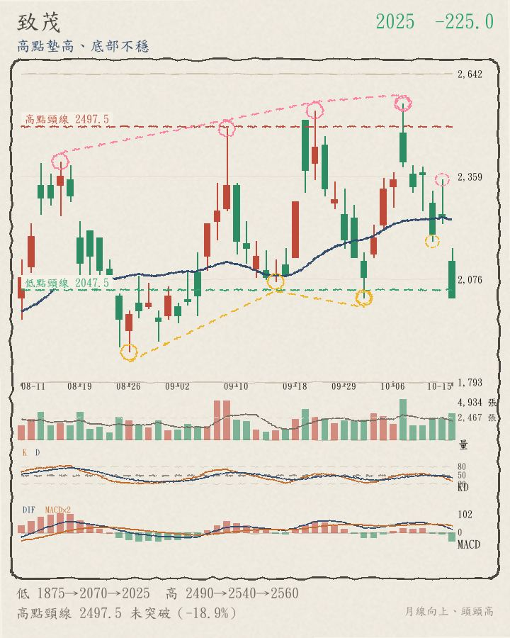
12:31 盤中 2025（-10.00%），比加權指數弱 6.76 個百分點、跌破月線 2246.5，離高點頸線 2497.5 還差 18.9%，高點還在墊高（但底部沒同步墊高）。
- 月線位置：現價 2025 在月線 2246.5 之下（-9.9%）；5 日線 2309 也在月線之上（短均在上）；月線向上
- 量能：以已過交易時間推估，今天成交量約是 20 日均量的 1.76 倍（爆量），比 20 日均量大不少；下跌卻量增，量價背離
- 關鍵價位：高點頸線 2497.5 還沒突破，差 18.9%；前一交易日高點 2350（低於 13.8%）；今天盤中高點 2160（低於 6.2%）；今天盤中低點 2025（高於 0.0%）
- 轉折結構：高點 2490、2540、2560 墊高（頭頭高），但低點 1875、2070、2025 沒有同步墊高；還沒確認的轉折低點 10-01 2025、10-13 2180；還沒確認的轉折高點 10-07 2560、10-14 2350（圖上虛線小圈）
世芯-KY 3661 上市
3755 -185.0（-4.70%）
高點墊高、底部不穩 盤中成交值 60.72 億・全榜第 42 名（上市第 34 名）・相對大盤 -1.46
好條件 2/8：月線向上、頭頭高
不好條件 4/8：今日下跌、相對大盤弱、在月線之下、跌破昨日低點
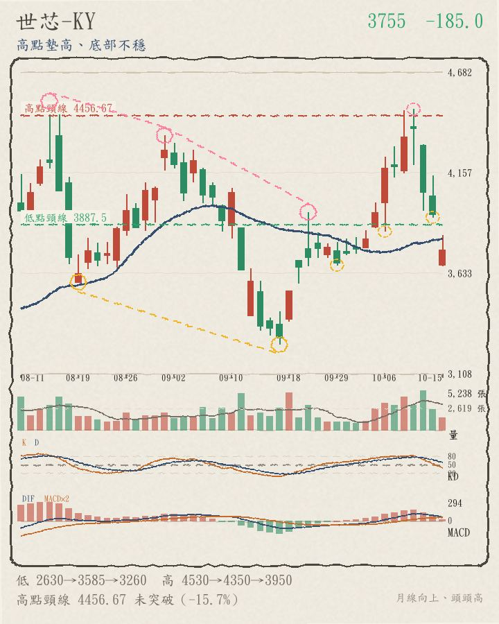
12:31 盤中 3755（-4.70%），比加權指數弱 1.46 個百分點、跌破月線 3804.5，離高點頸線 4456.67 還差 15.7%，高點還在墊高（但底部沒同步墊高）。
- 月線位置：現價 3755 在月線 3804.5 之下（-1.3%）；5 日線 4185 也在月線之上（短均在上）；月線向上
- 量能：以已過交易時間推估，今天成交量約是 20 日均量的 0.79 倍（量平），比 20 日均量少很多
- 關鍵價位：高點頸線 4456.67 還沒突破，差 15.7%；前一交易日高點 4140（低於 9.3%）；今天盤中高點 3830（低於 2.0%）；今天盤中低點 3670（高於 2.3%）
- 轉折結構：高點 4530、4350、3950 墊高（頭頭高），但低點 2630、3585、3260 沒有同步墊高；還沒確認的轉折低點 10-06 3850、10-14 3925；還沒確認的轉折高點 10-12 4490（圖上虛線小圈）
聯亞 3081 上櫃
2710 -170.0（-5.90%）
高點墊高、底部不穩 盤中成交值 60.57 億・全榜第 43 名（上櫃第 9 名）・相對大盤 -2.66
好條件 2/8：月線向上、頭頭高
不好條件 3/8：今日下跌、相對大盤弱、在月線之下
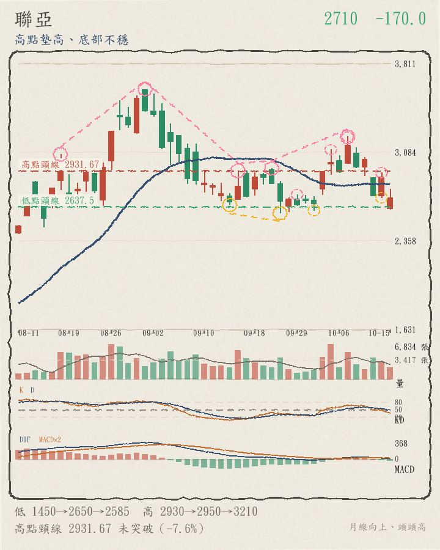
12:31 盤中 2710（-5.90%），比加權指數弱 2.66 個百分點、跌破月線 2824.25，離高點頸線 2931.67 還差 7.6%，高點還在墊高（但底部沒同步墊高）。
- 月線位置：現價 2710 在月線 2824.25 之下（-4.0%）；5 日線 2946 也在月線之上（短均在上）；月線向上
- 量能：以已過交易時間推估，今天成交量約是 20 日均量的 0.92 倍（量平），比 20 日均量少一些
- 關鍵價位：高點頸線 2931.67 還沒突破，差 7.6%；前一交易日高點 2915（低於 7.0%）；今天盤中高點 2780（低於 2.5%）；今天盤中低點 2615（高於 3.6%）
- 轉折結構：高點 2930、2950、3210 墊高（頭頭高），但低點 1450、2650、2585 沒有同步墊高；還沒確認的轉折低點 10-01 2605、10-14 2710；還沒確認的轉折高點 10-07 3210、10-14 2915（圖上虛線小圈）
力成 6239 上市
272 -26.5（-8.88%）
高點墊高、底部不穩 盤中成交值 56.52 億・全榜第 44 名（上市第 35 名）・相對大盤 -5.64
好條件 2/8：月線向上、頭頭高
不好條件 6/8：跌破前低、今日下跌、相對大盤弱、在月線之下、量增下跌（出貨）、跌破昨日低點
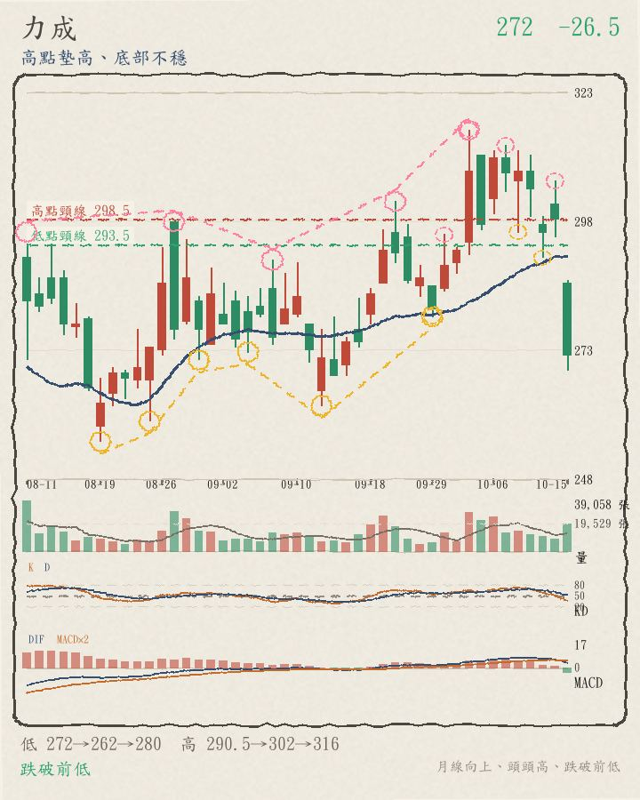
12:31 盤中 272（-8.88%），比加權指數弱 5.64 個百分點、跌破月線 291.2，離高點頸線 298.5 還差 8.9%，高點還在墊高（但底部沒同步墊高）。
- 月線位置：現價 272 在月線 291.2 之下（-6.6%）；5 日線 302.9 也在月線之上（短均在上）；月線向上
- 量能：以已過交易時間推估，今天成交量約是 20 日均量的 1.84 倍（爆量），比 20 日均量大不少；下跌卻量增，量價背離
- 關鍵價位：已跌破前一個轉折低點；高點頸線 298.5 還在現價上方 8.9%；前一交易日高點 306（低於 11.1%）；今天盤中高點 286.5（低於 5.1%）；今天盤中低點 269（高於 1.1%）
- 轉折結構：高點 290.5、302、316 墊高（頭頭高），但低點 272.5、262、279.5 沒有同步墊高；還沒確認的轉折低點 10-08 296、10-13 291；還沒確認的轉折高點 10-07 313、10-14 306（圖上虛線小圈）
群創 3481 上市
48.95 -1.9（-3.83%）
高點墊高、底部不穩 盤中成交值 56.44 億・全榜第 45 名（上市第 36 名）・相對大盤 -0.59
好條件 2/8：月線向上、頭頭高
不好條件 4/8：今日下跌、相對大盤弱、在月線之下、跌破昨日低點
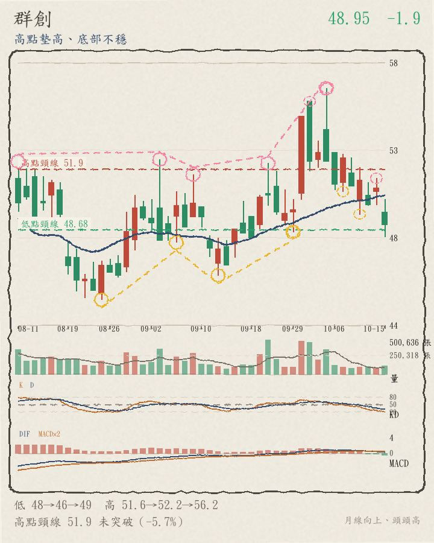
12:31 盤中 48.95（-3.83%），比加權指數弱 0.59 個百分點、跌破月線 50.43，離高點頸線 51.9 還差 5.7%，高點還在墊高（但底部沒同步墊高）。
- 月線位置：現價 48.95 在月線 50.43 之下（-2.9%）；5 日線 51.14 也在月線之上（短均在上）；月線向上
- 量能：以已過交易時間推估，今天成交量約是 20 日均量的 0.75 倍（量平），比 20 日均量少很多
- 關鍵價位：高點頸線 51.9 還沒突破，差 5.7%；前一交易日高點 51.4（低於 4.8%）；今天盤中高點 50.3（低於 2.7%）；今天盤中低點 48.3（高於 1.3%）
- 轉折結構：高點 51.6、52.2、56.2 墊高（頭頭高），但低點 48、46.25、48.55 沒有同步墊高；還沒確認的轉折低點 10-07 50.7、10-12 49.5；還沒確認的轉折高點 10-05 56.2、10-14 51.4（圖上虛線小圈）
高力 8996 上市
1520 -165.0（-9.79%）
上升趨勢（底底高＋頭頭高） 盤中成交值 55.59 億・全榜第 46 名（上市第 37 名）・相對大盤 -6.55
好條件 3/8：月線向上、底底高、頭頭高
不好條件 5/8：今日下跌、相對大盤弱、在月線之下、量增下跌（出貨）、跌破昨日低點
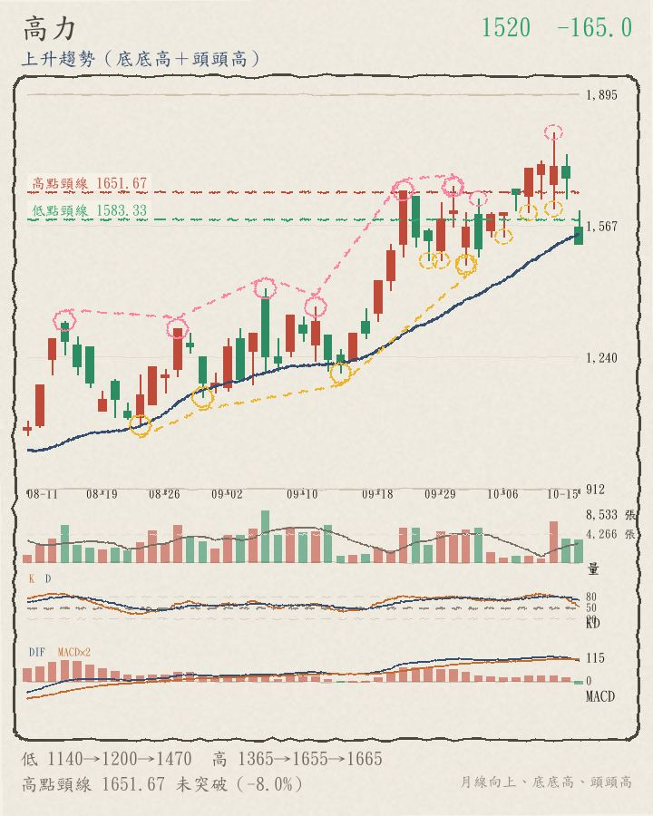
12:31 盤中 1520（-9.79%），比加權指數弱 6.55 個百分點、跌破月線 1532.5，離高點頸線 1651.67 還差 8.0%，轉折結構仍是底底高＋頭頭高。
- 月線位置：現價 1520 在月線 1532.5 之下（-0.8%）；5 日線 1695 也在月線之上（短均在上）；月線向上
- 量能：以已過交易時間推估，今天成交量約是 20 日均量的 1.45 倍（量增），比 20 日均量大不少；下跌卻量增，量價背離
- 關鍵價位：高點頸線 1651.67 還沒突破，差 8.0%；前一交易日高點 1745（低於 12.9%）；今天盤中高點 1605（低於 5.3%）；今天盤中低點 1520（高於 0.0%）
- 轉折結構：低點 1140、1200、1470 一路墊高、高點 1365、1655、1665 也一路墊高，是底底高＋頭頭高；還沒確認的轉折低點 10-08 1600、10-13 1610；還沒確認的轉折高點 10-02 1635、10-13 1800（圖上虛線小圈）
日電貿 3090 上市
174 -9.5（-5.18%）
高點墊高、底部不穩 盤中成交值 55.08 億・全榜第 47 名（上市第 38 名）・相對大盤 -1.94
好條件 3/8：站上月線、月線向上、頭頭高
不好條件 3/8：今日下跌、相對大盤弱、量增下跌（出貨）
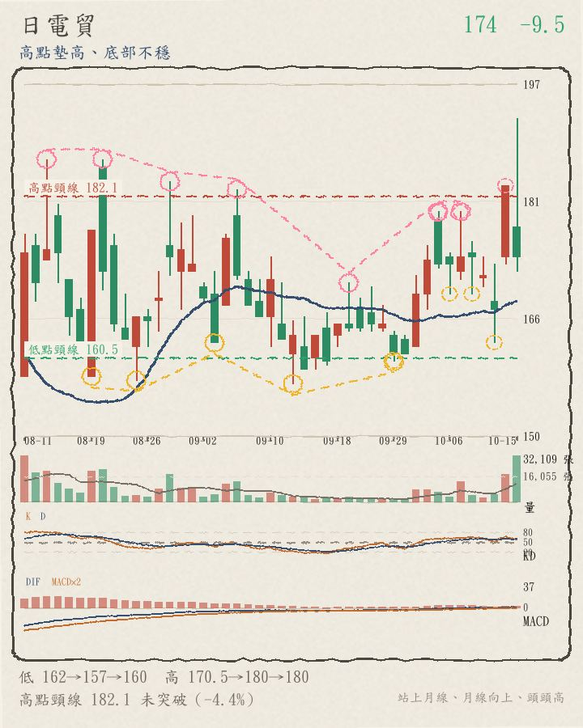
12:31 盤中 174（-5.18%），比加權指數弱 1.94 個百分點、站上月線 167.525，離高點頸線 182.1 還差 4.4%，高點還在墊高（但底部沒同步墊高）。
- 月線位置：現價 174 在月線 167.525 之上（+3.9%）；5 日線 174 也在月線之上（短均在上）；月線向上
- 量能：以已過交易時間推估，今天成交量約是 20 日均量的 10.11 倍（爆量），比 20 日均量大不少；下跌卻量增，量價背離
- 關鍵價位：高點頸線 182.1 還沒突破，差 4.4%；前一交易日高點 183.5（低於 5.2%）；今天盤中高點 192.5（低於 9.6%）；今天盤中低點 172（高於 1.2%）
- 轉折結構：高點 170.5、180、180 墊高（頭頭高），但低點 162.5、157、160 沒有同步墊高；還沒確認的轉折低點 10-08 169、10-13 162.5；還沒確認的轉折高點 10-07 180、10-14 183.5（圖上虛線小圈）
台塑化 6505 上市
112 -7.5（-6.28%）
上升趨勢（底底高＋頭頭高） 盤中成交值 54.23 億・全榜第 48 名（上市第 39 名）・相對大盤 -3.04
好條件 5/8：站上月線、月線向上、底底高、頭頭高、突破頸線
不好條件 4/8：今日下跌、相對大盤弱、量增下跌（出貨）、跌破昨日低點
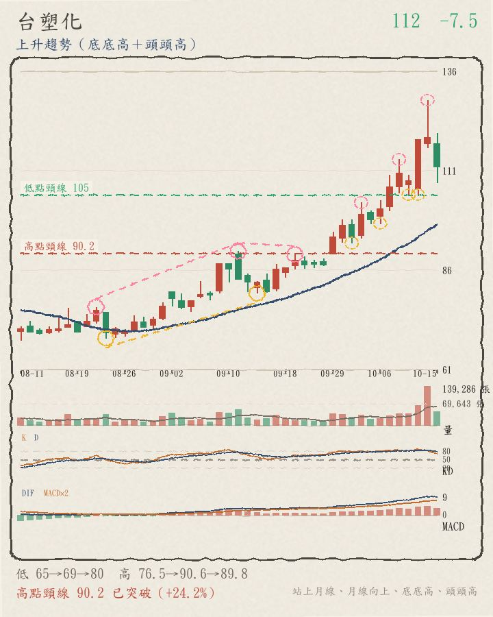
12:31 盤中 112（-6.28%），比加權指數弱 3.04 個百分點、站上月線 95.975，已突破高點頸線 90.2，轉折結構仍是底底高＋頭頭高。
- 月線位置：現價 112 在月線 95.975 之上（+16.7%）；5 日線 112.9 也在月線之上（短均在上）；月線向上
- 量能：以已過交易時間推估，今天成交量約是 20 日均量的 2.05 倍（爆量），比 20 日均量大不少；下跌卻量增，量價背離
- 關鍵價位：高點頸線 90.2 已站上；前一交易日高點 129（低於 13.2%）；今天盤中高點 120.5（低於 7.1%）；今天盤中低點 108（高於 3.7%）
- 轉折結構：低點 65.4、68.6、80 一路墊高、高點 76.5、90.6、89.8 也一路墊高，是底底高＋頭頭高；還沒確認的轉折低點 10-12 105、10-13 105；還沒確認的轉折高點 10-08 114、10-14 129（圖上虛線小圈）
台化 1326 上市
77 -8.5（-9.94%）
高點墊高、底部不穩 盤中成交值 53.22 億・全榜第 49 名（上市第 40 名）・相對大盤 -6.70
好條件 3/8：站上月線、月線向上、頭頭高
不好條件 4/8：今日下跌、相對大盤弱、量增下跌（出貨）、跌破昨日低點
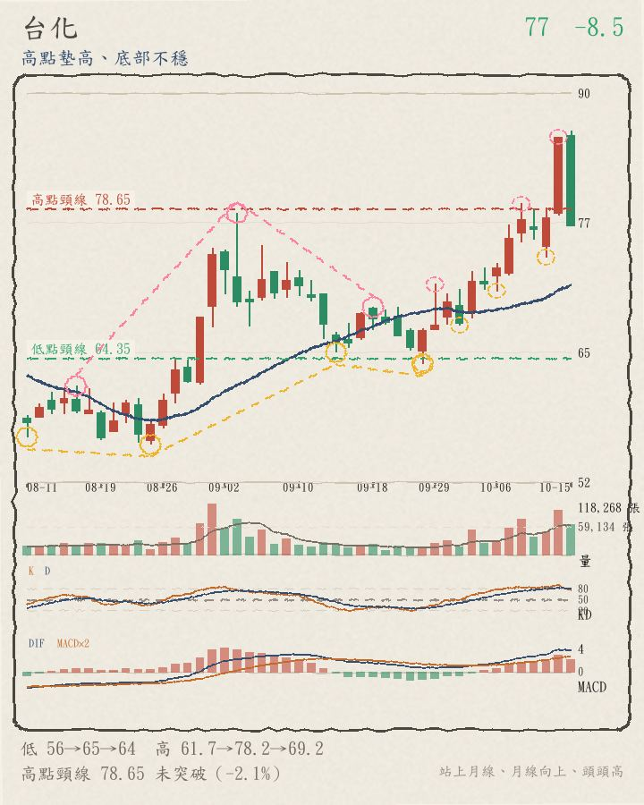
12:31 盤中 77（-9.94%），比加權指數弱 6.70 個百分點、站上月線 70.865，離高點頸線 78.65 還差 2.1%，高點還在墊高（但底部沒同步墊高）。
- 月線位置：現價 77 在月線 70.865 之上（+8.7%）；5 日線 78.7 也在月線之上（短均在上）；月線向上
- 量能：以已過交易時間推估，今天成交量約是 20 日均量的 2.86 倍（爆量），比 20 日均量大不少；下跌卻量增，量價背離
- 關鍵價位：高點頸線 78.65 還沒突破，差 2.1%；前一交易日高點 85.5（低於 9.9%）；今天盤中高點 86.1（低於 10.6%）；今天盤中低點 77（高於 0.0%）
- 轉折結構：高點 61.7、78.2、69.2 墊高（頭頭高），但低點 56.1、64.9、63.8 沒有同步墊高；還沒確認的轉折低點 10-06 70.8、10-13 74；還沒確認的轉折高點 10-08 79.1、10-14 85.5（圖上虛線小圈）
華通 2313 上市
232 -18.5（-7.39%）
底部墊高、未過前高 盤中成交值 52.07 億・全榜第 50 名（上市第 41 名）・相對大盤 -4.15
好條件 2/8：月線向上、底底高
不好條件 4/8：今日下跌、相對大盤弱、在月線之下、跌破昨日低點
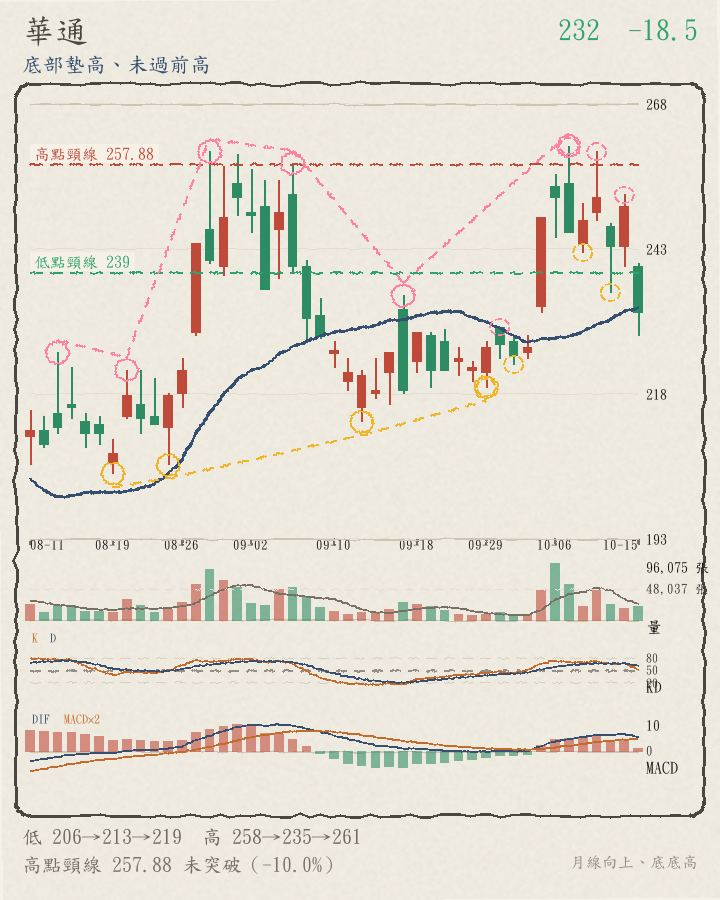
12:31 盤中 232（-7.39%），比加權指數弱 4.15 個百分點、跌破月線 232.275，離高點頸線 257.88 還差 10.0%，底部還在墊高（但高點沒同步創高）。
- 月線位置：現價 232 在月線 232.275 之下（-0.1%）；5 日線 248 也在月線之上（短均在上）；月線向上
- 量能：以已過交易時間推估，今天成交量約是 20 日均量的 1.14 倍（量增），比 20 日均量大一些；下跌卻量增，量價背離
- 關鍵價位：高點頸線 257.88 還沒突破，差 10.0%；前一交易日高點 252.5（低於 8.1%）；今天盤中高點 240.5（低於 3.5%）；今天盤中低點 228（高於 1.8%）
- 轉折結構：低點 205.5、213、219 墊高（底底高），但高點 258、235、261 沒有同步創高；還沒確認的轉折低點 10-08 242.5、10-13 235.5；還沒確認的轉折高點 10-12 260、10-14 252.5（圖上虛線小圈）
大毅 2478 上市
141.5 +4.0（+2.91%）
區間或轉弱 盤中成交值 51.4 億・全榜第 51 名（上市第 42 名）・相對大盤 +6.15
好條件 5/8：站上月線、月線向上、突破頸線、相對大盤強、攻擊量（量增＋上漲）
不好條件 0/8：無
12:31 盤中 141.5（+2.91%），比加權指數強 6.15 個百分點、站上月線 123.95，已突破高點頸線 138，轉折還沒走出明顯方向。
- 月線位置：現價 141.5 在月線 123.95 之上（+14.2%）；5 日線 132.2 也在月線之上（短均在上）；月線向上
- 量能：以已過交易時間推估，今天成交量約是 20 日均量的 14.32 倍（爆量），比 20 日均量大不少；上漲又量增，量價配合
- 關鍵價位：高點頸線 138 已站上；前一交易日高點 137.5（高於 2.9%）；今天盤中高點 150（低於 5.7%）；今天盤中低點 135.5（高於 4.4%）
- 轉折結構：低點 114.5、114、116.5 與高點 124、124、138.5 都沒有明顯遞增，屬於區間震盪或轉弱；還沒確認的轉折低點 10-06 125.5、10-13 122.5；還沒確認的轉折高點 10-07 138.5、10-14 137.5（圖上虛線小圈）
貿聯-KY 3665 上市
2015 -220.0（-9.84%）
高點墊高、底部不穩 盤中成交值 49.09 億・全榜第 52 名（上市第 43 名）・相對大盤 -6.60
好條件 2/8：月線向上、頭頭高
不好條件 4/8：今日下跌、相對大盤弱、在月線之下、跌破昨日低點
12:31 盤中 2015（-9.84%），比加權指數弱 6.60 個百分點、跌破月線 2292.25，離高點頸線 2378.33 還差 15.3%，高點還在墊高（但底部沒同步墊高）。
- 月線位置：現價 2015 在月線 2292.25 之下（-12.1%）；5 日線 2305 也在月線之上（短均在上）；月線向上
- 量能：以已過交易時間推估，今天成交量約是 20 日均量的 0.85 倍（量平），比 20 日均量少一些
- 關鍵價位：高點頸線 2378.33 還沒突破，差 15.3%；前一交易日高點 2315（低於 13.0%）；今天盤中高點 2150（低於 6.3%）；今天盤中低點 2015（高於 0.0%）
- 轉折結構：高點 2360、2375、2685 墊高（頭頭高），但低點 2095、1930、1810 沒有同步墊高；還沒確認的轉折低點 10-13 2215、10-14 2215；還沒確認的轉折高點 10-02 2670、10-08 2400（圖上虛線小圈）
愛普* 6531 上市
834 -89.0（-9.64%）
區間或轉弱 盤中成交值 48.21 億・全榜第 53 名（上市第 44 名）・相對大盤 -6.40
好條件 0/8：無
不好條件 8/8：跌破前低、今日下跌、相對大盤弱、在月線之下、量增下跌（出貨）、貼近今日低點（1% 內）、跌破昨日低點、月線下彎
12:31 盤中 834（-9.64%），比加權指數弱 6.40 個百分點、跌破月線 960.8，離高點頸線 990 還差 15.8%，轉折還沒走出明顯方向。
- 月線位置：現價 834 在月線 960.8 之下（-13.2%）；5 日線 955.2 也在月線之下（短均在下）；月線向下
- 量能：以已過交易時間推估，今天成交量約是 20 日均量的 2.05 倍（爆量），比 20 日均量大不少；下跌卻量增，量價背離
- 關鍵價位：已跌破前一個轉折低點；高點頸線 990 還在現價上方 15.8%；前一交易日高點 970（低於 14.0%）；今天盤中高點 902（低於 7.5%）；今天盤中低點 831（高於 0.4%）
- 轉折結構：低點 901、887、914 與高點 1065、1005、1090 都沒有明顯遞增，屬於區間震盪或轉弱；還沒確認的轉折低點 10-01 914、10-13 891；還沒確認的轉折高點 10-05 1090、10-14 970（圖上虛線小圈）
精材 3374 上櫃
456.5 -42.5（-8.52%）
底部墊高、未過前高 盤中成交值 47.13 億・全榜第 54 名（上櫃第 10 名）・相對大盤 -5.28
好條件 2/8：月線向上、底底高
不好條件 5/8：今日下跌、相對大盤弱、在月線之下、量增下跌（出貨）、跌破昨日低點
12:31 盤中 456.5（-8.52%），比加權指數弱 5.28 個百分點、跌破月線 462.275，離高點頸線 497 還差 8.1%，底部還在墊高（但高點沒同步創高）。
- 月線位置：現價 456.5 在月線 462.275 之下（-1.2%）；5 日線 488 也在月線之上（短均在上）；月線向上
- 量能：以已過交易時間推估，今天成交量約是 20 日均量的 1.29 倍（量增），比 20 日均量大不少；下跌卻量增，量價背離
- 關鍵價位：高點頸線 497 還沒突破，差 8.1%；前一交易日高點 508（低於 10.1%）；今天盤中高點 484（低於 5.7%）；今天盤中低點 449.5（高於 1.6%）
- 轉折結構：低點 289、407、436.5 墊高（底底高），但高點 496、487、530 沒有同步創高；還沒確認的轉折低點 10-07 475.5、10-13 444；還沒確認的轉折高點 10-08 512、10-14 508（圖上虛線小圈）
旺矽 6223 上櫃
5300 -585.0（-9.94%）
高點墊高、底部不穩 盤中成交值 45.31 億・全榜第 55 名（上櫃第 11 名）・相對大盤 -6.70
好條件 2/8：月線向上、頭頭高
不好條件 5/8：今日下跌、相對大盤弱、在月線之下、量增下跌（出貨）、跌破昨日低點
12:31 盤中 5300（-9.94%），比加權指數弱 6.70 個百分點、跌破月線 5535.5，離高點頸線 5842.5 還差 9.3%，高點還在墊高（但底部沒同步墊高）。
- 月線位置：現價 5300 在月線 5535.5 之下（-4.2%）；5 日線 5812 也在月線之上（短均在上）；月線向上
- 量能：以已過交易時間推估，今天成交量約是 20 日均量的 1.26 倍（量增），比 20 日均量大不少；下跌卻量增，量價背離
- 關鍵價位：高點頸線 5842.5 還沒突破，差 9.3%；前一交易日高點 6125（低於 13.5%）；今天盤中高點 5615（低於 5.6%）；今天盤中低點 5300（高於 0.0%）
- 轉折結構：高點 5585、6060、5860 墊高（頭頭高），但低點 5365、5090、4995 沒有同步墊高；還沒確認的轉折低點 10-08 5450、10-14 5835；還沒確認的轉折高點 10-07 5725、10-13 6160（圖上虛線小圈）
矽力*-KY 6415 上市
457 -14.0（-2.97%）
區間或轉弱 盤中成交值 45.18 億・全榜第 56 名（上市第 45 名）・相對大盤 +0.27
好條件 3/8：站上月線、月線向上、相對大盤強
不好條件 2/8：今日下跌、量增下跌（出貨）
12:31 盤中 457（-2.97%），比加權指數強 0.27 個百分點、站上月線 430.1，離高點頸線 473 還差 3.4%，轉折還沒走出明顯方向。
- 月線位置：現價 457 在月線 430.1 之上（+6.2%）；5 日線 451.7 也在月線之上（短均在上）；月線向上
- 量能：以已過交易時間推估，今天成交量約是 20 日均量的 5.40 倍（爆量），比 20 日均量大不少；下跌卻量增，量價背離
- 關鍵價位：高點頸線 473 還沒突破，差 3.4%；前一交易日高點 471（低於 3.0%）；今天盤中高點 497.5（低於 8.1%）；今天盤中低點 443（高於 3.2%）
- 轉折結構：低點 401.5、385、406.5 與高點 488.5、443、475 都沒有明顯遞增，屬於區間震盪或轉弱；還沒確認的轉折低點 10-01 406.5、10-13 412；還沒確認的轉折高點 10-08 475、10-14 471（圖上虛線小圈）
川湖 2059 上市
9760 -245.0（-2.45%）
區間或轉弱 盤中成交值 44.41 億・全榜第 57 名（上市第 46 名）・相對大盤 +0.79
好條件 1/8：相對大盤強
不好條件 5/8：跌破前低、今日下跌、在月線之下、跌破昨日低點、月線下彎
12:31 盤中 9760（-2.45%），比加權指數強 0.79 個百分點、跌破月線 11920.2，離高點頸線 13196.7 還差 26.0%，轉折還沒走出明顯方向。
- 月線位置：現價 9760 在月線 11920.2 之下（-18.1%）；5 日線 10610 也在月線之下（短均在下）；月線向下
- 量能：以已過交易時間推估，今天成交量約是 20 日均量的 1.16 倍（量增），比 20 日均量大不少；下跌卻量增，量價背離
- 關鍵價位：已跌破前一個轉折低點；高點頸線 13196.7 還在現價上方 26.0%；前一交易日高點 10295（低於 5.2%）；今天盤中高點 9920（低於 1.6%）；今天盤中低點 9500（高於 2.7%）
- 轉折結構：低點 13310、11665、11700 與高點 14200、13305、13500 都沒有明顯遞增，屬於區間震盪或轉弱；還沒確認的轉折低點 10-02 11700、10-14 9950；還沒確認的轉折高點 09-30 12785、10-06 13500（圖上虛線小圈）
欣銓 3264 上櫃
263.5 -14.5（-5.22%）
高點墊高、底部不穩 盤中成交值 44.39 億・全榜第 58 名（上櫃第 12 名）・相對大盤 -1.98
好條件 3/8：站上月線、月線向上、頭頭高
不好條件 4/8：今日下跌、相對大盤弱、量增下跌（出貨）、跌破昨日低點
12:31 盤中 263.5（-5.22%），比加權指數弱 1.98 個百分點、站上月線 251.55，離高點頸線 290.5 還差 9.3%，高點還在墊高（但底部沒同步墊高）。
- 月線位置：現價 263.5 在月線 251.55 之上（+4.8%）；5 日線 265 也在月線之上（短均在上）；月線向上
- 量能：以已過交易時間推估，今天成交量約是 20 日均量的 1.29 倍（量增），比 20 日均量大不少；下跌卻量增，量價背離
- 關鍵價位：高點頸線 290.5 還沒突破，差 9.3%；前一交易日高點 291.5（低於 9.6%）；今天盤中高點 271（低於 2.8%）；今天盤中低點 260.5（高於 1.2%）
- 轉折結構：高點 239.5、251.5、289.5 墊高（頭頭高），但低點 220、238、238 沒有同步墊高；還沒確認的轉折低點 10-05 239.5、10-08 243；還沒確認的轉折高點 10-12 277、10-14 291.5（圖上虛線小圈）
台玻 1802 上市
62.8 -4.2（-6.27%）
高點墊高、底部不穩 盤中成交值 43.51 億・全榜第 59 名（上市第 47 名）・相對大盤 -3.03
好條件 3/8：站上月線、月線向上、頭頭高
不好條件 3/8：今日下跌、相對大盤弱、量增下跌（出貨）
12:31 盤中 62.8（-6.27%），比加權指數弱 3.03 個百分點、站上月線 60.065，離高點頸線 67.17 還差 6.5%，高點還在墊高（但底部沒同步墊高）。
- 月線位置：現價 62.8 在月線 60.065 之上（+4.5%）；5 日線 64.38 也在月線之上（短均在上）；月線向上
- 量能：以已過交易時間推估，今天成交量約是 20 日均量的 2.59 倍（爆量），比 20 日均量大不少；下跌卻量增，量價背離
- 關鍵價位：高點頸線 67.17 還沒突破，差 6.5%；前一交易日高點 67.9（低於 7.5%）；今天盤中高點 65.1（低於 3.5%）；今天盤中低點 62（高於 1.3%）
- 轉折結構：高點 64、61.7、61.7 墊高（頭頭高），但低點 57.5、56、56.6 沒有同步墊高；還沒確認的轉折低點 10-06 58.8、10-13 60.3；還沒確認的轉折高點 10-12 66.8、10-14 67.9（圖上虛線小圈）
中信金 2891 上市
73.2 +1.8（+2.52%）
高點墊高、底部不穩 盤中成交值 43.38 億・全榜第 60 名（上市第 48 名）・相對大盤 +5.76
好條件 7/8：站上月線、月線向上、頭頭高、突破頸線、相對大盤強、攻擊量（量增＋上漲）、守住今日高檔（距今日高點 1% 內）
不好條件 0/8：無
12:31 盤中 73.2（+2.52%），比加權指數強 5.76 個百分點、站上月線 69.18，已突破高點頸線 72，高點還在墊高（但底部沒同步墊高）。
- 月線位置：現價 73.2 在月線 69.18 之上（+5.8%）；5 日線 69.76 也在月線之上（短均在上）；月線向上
- 量能：以已過交易時間推估，今天成交量約是 20 日均量的 2.40 倍（爆量），比 20 日均量大不少；上漲又量增，量價配合
- 關鍵價位：高點頸線 72 已站上；前一交易日高點 71.9（高於 1.8%）；今天盤中高點 73.6（低於 0.5%）；今天盤中低點 70.7（高於 3.5%）
- 轉折結構：高點 67.3、69.5、72 墊高（頭頭高），但低點 66、67.1、67.3 沒有同步墊高；還沒確認的轉折低點 10-05 67.3、10-08 67.3；還沒確認的轉折高點 10-07 69.5、10-13 72（圖上虛線小圈）
光寶科 2301 上市
267 -16.0（-5.65%）
區間或轉弱 盤中成交值 43.07 億・全榜第 61 名（上市第 49 名）・相對大盤 -2.41
好條件 0/8：無
不好條件 8/8：跌破前低、今日下跌、相對大盤弱、在月線之下、量增下跌（出貨）、貼近今日低點（1% 內）、跌破昨日低點、月線下彎
12:31 盤中 267（-5.65%），比加權指數弱 2.41 個百分點、跌破月線 285，離高點頸線 302 還差 11.6%，轉折還沒走出明顯方向。
- 月線位置：現價 267 在月線 285 之下（-6.3%）；5 日線 288.9 也在月線之上（短均在上）；月線向下
- 量能：以已過交易時間推估，今天成交量約是 20 日均量的 1.32 倍（量增），比 20 日均量大不少；下跌卻量增，量價背離
- 關鍵價位：已跌破前一個轉折低點；高點頸線 302 還在現價上方 11.6%；前一交易日高點 284（低於 6.0%）；今天盤中高點 274.5（低於 2.7%）；今天盤中低點 266.5（高於 0.2%）
- 轉折結構：低點 271、278、278 與高點 328、299.5、304.5 都沒有明顯遞增，屬於區間震盪或轉弱；還沒確認的轉折低點 10-01 278、10-13 275；還沒確認的轉折高點 10-01 285、10-07 304.5（圖上虛線小圈）
鴻勁 7769 上市
5205 -575.0（-9.95%）
區間或轉弱 盤中成交值 42.89 億・全榜第 62 名（上市第 50 名）・相對大盤 -6.71
好條件 0/8：無
不好條件 7/8：跌破前低、今日下跌、相對大盤弱、在月線之下、量增下跌（出貨）、跌破昨日低點、月線下彎
12:31 盤中 5205（-9.95%），比加權指數弱 6.71 個百分點、跌破月線 5953.5，離高點頸線 6556.67 還差 20.6%，轉折還沒走出明顯方向。
- 月線位置：現價 5205 在月線 5953.5 之下（-12.6%）；5 日線 6030 也在月線之上（短均在上）；月線向下
- 量能：以已過交易時間推估，今天成交量約是 20 日均量的 1.22 倍（量增），比 20 日均量大不少；下跌卻量增，量價背離
- 關鍵價位：已跌破前一個轉折低點；高點頸線 6556.67 還在現價上方 20.6%；前一交易日高點 6135（低於 15.2%）；今天盤中高點 5625（低於 7.5%）；今天盤中低點 5205（高於 0.0%）
- 轉折結構：低點 6060、5620、5380 與高點 6540、7160、6615 都沒有明顯遞增，屬於區間震盪或轉弱；還沒確認的轉折低點 10-12 5870、10-14 5780；還沒確認的轉折高點 10-06 6115、10-12 6515（圖上虛線小圈）
華星光 4979 上櫃
551 -37.0（-6.29%）
區間或轉弱 盤中成交值 40.27 億・全榜第 63 名（上櫃第 13 名）・相對大盤 -3.05
好條件 0/8：無
不好條件 5/8：今日下跌、相對大盤弱、在月線之下、量增下跌（出貨）、月線下彎
12:31 盤中 551（-6.29%），比加權指數弱 3.05 個百分點、跌破月線 571.95，離高點頸線 582.33 還差 5.4%，轉折還沒走出明顯方向。
- 月線位置：現價 551 在月線 571.95 之下（-3.7%）；5 日線 569.8 也在月線之下（短均在下）；月線向下
- 量能：以已過交易時間推估，今天成交量約是 20 日均量的 1.87 倍（爆量），比 20 日均量大不少；下跌卻量增，量價背離
- 關鍵價位：高點頸線 582.33 還沒突破，差 5.4%；前一交易日高點 588（低於 6.3%）；今天盤中高點 574（低於 4.0%）；今天盤中低點 539（高於 2.2%）
- 轉折結構：低點 572、501、545 與高點 658、650、622 都沒有明顯遞增，屬於區間震盪或轉弱；還沒確認的轉折低點 10-06 561、10-13 524；還沒確認的轉折高點 10-12 583、10-14 588（圖上虛線小圈）
金山電 8042 上櫃
153 -5.0（-3.16%）
上升趨勢（底底高＋頭頭高） 盤中成交值 39.35 億・全榜第 64 名（上櫃第 14 名）・相對大盤 +0.08
好條件 6/8：站上月線、月線向上、底底高、頭頭高、突破頸線、相對大盤強
不好條件 2/8：今日下跌、量增下跌（出貨）
12:31 盤中 153（-3.16%），比加權指數強 0.08 個百分點、站上月線 120.616，已突破高點頸線 125，轉折結構仍是底底高＋頭頭高。
- 月線位置：現價 153 在月線 120.616 之上（+26.9%）；5 日線 142.1 也在月線之上（短均在上）；月線向上
- 量能：以已過交易時間推估，今天成交量約是 20 日均量的 3.71 倍（爆量），比 20 日均量大不少；下跌卻量增，量價背離
- 關鍵價位：高點頸線 125 已站上；前一交易日高點 158（低於 3.2%）；今天盤中高點 166（低於 7.8%）；今天盤中低點 150（高於 2.0%）
- 轉折結構：低點 100、107.5、110 一路墊高、高點 115、123.5、117.177 也一路墊高，是底底高＋頭頭高；還沒確認的轉折低點 09-24 110、10-06 117；還沒確認的轉折高點 10-05 126.5、10-14 158（圖上虛線小圈）
萬潤 6187 上櫃
1390 -150.0（-9.74%）
高點墊高、底部不穩 盤中成交值 38.29 億・全榜第 65 名（上櫃第 15 名）・相對大盤 -6.50
好條件 3/8：站上月線、月線向上、頭頭高
不好條件 4/8：今日下跌、相對大盤弱、量增下跌（出貨）、跌破昨日低點
12:31 盤中 1390（-9.74%），比加權指數弱 6.50 個百分點、站上月線 1356，離高點頸線 1436.67 還差 3.2%，高點還在墊高（但底部沒同步墊高）。
- 月線位置：現價 1390 在月線 1356 之上（+2.5%）；5 日線 1575 也在月線之上（短均在上）；月線向上
- 量能：以已過交易時間推估，今天成交量約是 20 日均量的 1.40 倍（量增），比 20 日均量大不少；下跌卻量增，量價背離
- 關鍵價位：高點頸線 1436.67 還沒突破，差 3.2%；前一交易日高點 1610（低於 13.7%）；今天盤中高點 1480（低於 6.1%）；今天盤中低點 1390（高於 0.0%）
- 轉折結構：高點 1455、1435、1270 墊高（頭頭高），但低點 1185、1180、1180 沒有同步墊高；還沒確認的轉折低點 10-08 1490、10-14 1530；還沒確認的轉折高點 10-06 1590、10-13 1680（圖上虛線小圈）
亞電 4939 上櫃
80.7 +2.2（+2.80%）
區間或轉弱 盤中成交值 33.43 億・全榜第 66 名（上櫃第 16 名）・相對大盤 +6.04
好條件 3/8：站上月線、相對大盤強、攻擊量（量增＋上漲）
不好條件 1/8：月線下彎
12:31 盤中 80.7（+2.80%），比加權指數強 6.04 個百分點、站上月線 77.58，離高點頸線 82.35 還差 2.0%，轉折還沒走出明顯方向。
- 月線位置：現價 80.7 在月線 77.58 之上（+4.0%）；5 日線 76.02 也在月線之下（短均在下）；月線向下
- 量能：以已過交易時間推估，今天成交量約是 20 日均量的 7.34 倍（爆量），比 20 日均量大不少；上漲又量增，量價配合
- 關鍵價位：高點頸線 82.35 還沒突破，差 2.0%；前一交易日高點 78.5（高於 2.8%）；今天盤中高點 83（低於 2.8%）；今天盤中低點 77.5（高於 4.1%）
- 轉折結構：低點 80.2、75.3、71.3 與高點 94.5、84、80.7 都沒有明顯遞增，屬於區間震盪或轉弱；還沒確認的轉折低點 10-06 76.2、10-13 70；還沒確認的轉折高點 10-08 80.7、10-14 78.5（圖上虛線小圈）
合晶 6182 上櫃
111 -8.0（-6.72%）
區間或轉弱 盤中成交值 27.12 億・全榜第 67 名（上櫃第 17 名）・相對大盤 -3.48
好條件 1/8：月線向上
不好條件 5/8：今日下跌、相對大盤弱、在月線之下、貼近今日低點（1% 內）、跌破昨日低點
12:31 盤中 111（-6.72%），比加權指數弱 3.48 個百分點、跌破月線 120.95，離高點頸線 138.5 還差 19.9%，轉折還沒走出明顯方向。
- 月線位置：現價 111 在月線 120.95 之下（-8.2%）；5 日線 124.6 也在月線之上（短均在上）；月線向上
- 量能：以已過交易時間推估，今天成交量約是 20 日均量的 0.41 倍（量縮），比 20 日均量少很多
- 關鍵價位：高點頸線 138.5 還沒突破，差 19.9%；前一交易日高點 119.5（低於 7.1%）；今天盤中高點 115（低於 3.5%）；今天盤中低點 110（高於 0.9%）
- 轉折結構：低點 103.5、104、100 與高點 125、140、140 都沒有明顯遞增，屬於區間震盪或轉弱；還沒確認的轉折低點 10-06 126.5、10-13 113.5；還沒確認的轉折高點 10-05 140、10-07 135.5（圖上虛線小圈）
世界 5347 上櫃
163 -13.0（-7.39%）
高點墊高、底部不穩 盤中成交值 25.47 億・全榜第 68 名（上櫃第 18 名）・相對大盤 -4.15
好條件 2/8：月線向上、頭頭高
不好條件 4/8：今日下跌、相對大盤弱、在月線之下、跌破昨日低點
12:31 盤中 163（-7.39%），比加權指數弱 4.15 個百分點、跌破月線 175.55，離高點頸線 191.75 還差 15.0%，高點還在墊高（但底部沒同步墊高）。
- 月線位置：現價 163 在月線 175.55 之下（-7.2%）；5 日線 181.7 也在月線之上（短均在上）；月線向上
- 量能：以已過交易時間推估，今天成交量約是 20 日均量的 1.09 倍（量平），比 20 日均量大一些
- 關鍵價位：高點頸線 191.75 還沒突破，差 15.0%；前一交易日高點 178.5（低於 8.7%）；今天盤中高點 169.5（低於 3.8%）；今天盤中低點 160.5（高於 1.6%）
- 轉折結構：高點 158、163、195 墊高（頭頭高），但低點 146.5、147、152.5 沒有同步墊高；還沒確認的轉折低點 10-01 178.5、10-13 171.5；還沒確認的轉折高點 10-06 195、10-14 178.5（圖上虛線小圈）
雙鴻 3324 上櫃
1415 -75.0（-5.03%）
高點墊高、底部不穩 盤中成交值 23.89 億・全榜第 69 名（上櫃第 19 名）・相對大盤 -1.79
好條件 2/8：月線向上、頭頭高
不好條件 4/8：今日下跌、相對大盤弱、在月線之下、跌破昨日低點
12:31 盤中 1415（-5.03%），比加權指數弱 1.79 個百分點、跌破月線 1501.75，離高點頸線 1572.5 還差 10.0%，高點還在墊高（但底部沒同步墊高）。
- 月線位置：現價 1415 在月線 1501.75 之下（-5.8%）；5 日線 1510 也在月線之上（短均在上）；月線向上
- 量能：以已過交易時間推估，今天成交量約是 20 日均量的 0.55 倍（量縮），比 20 日均量少很多
- 關鍵價位：高點頸線 1572.5 還沒突破，差 10.0%；前一交易日高點 1510（低於 6.3%）；今天盤中高點 1465（低於 3.4%）；今天盤中低點 1400（高於 1.1%）
- 轉折結構：高點 1080、1505、1750 墊高（頭頭高），但低點 1240、1480、1395 沒有同步墊高；還沒確認的轉折低點 10-08 1395、10-14 1460；還沒確認的轉折高點 10-05 1575、10-08 1570（圖上虛線小圈）
力旺 3529 上櫃
2680 -195.0（-6.78%）
上升趨勢（底底高＋頭頭高） 盤中成交值 22.99 億・全榜第 70 名（上櫃第 20 名）・相對大盤 -3.54
好條件 3/8：月線向上、底底高、頭頭高
不好條件 5/8：今日下跌、相對大盤弱、在月線之下、貼近今日低點（1% 內）、跌破昨日低點
12:31 盤中 2680（-6.78%），比加權指數弱 3.54 個百分點、跌破月線 2992.25，離高點頸線 2975 還差 9.9%，轉折結構仍是底底高＋頭頭高。
- 月線位置：現價 2680 在月線 2992.25 之下（-10.4%）；5 日線 2893 也在月線之下（短均在下）；月線向上
- 量能：以已過交易時間推估，今天成交量約是 20 日均量的 0.88 倍（量平），比 20 日均量少一些
- 關鍵價位：高點頸線 2975 還沒突破，差 9.9%；前一交易日高點 2955（低於 9.3%）；今天盤中高點 2740（低於 2.2%）；今天盤中低點 2655（高於 0.9%）
- 轉折結構：低點 1995、2090、2530 一路墊高、高點 2720、2875、3635 也一路墊高，是底底高＋頭頭高；還沒確認的轉折低點 09-29 3145、10-13 2690；還沒確認的轉折高點 09-30 3635、10-14 2955（圖上虛線小圈）